Custom Voice Lines in Insurgency: Sandstorm (mod.io)
Overview
Custom voice lines can ship through mod.io with no pak overrides. This was tested end to end in the live game on Nov 9, 2026: a custom Wwise bank was swapped into one slot of a voice dictionary and played in game.
Voice lines are data-driven:
Voice cosmetic (
Game/Collectibles/Cosmetics/Character/Voice/CC_SEC_VOICE_AmericanMale01, etc.). Each one points at a dictionary through itsVoiceDictionaryproperty.Voice dictionary (
Game/Data/Dialogue/Security_AmericanMale_VoiceDictionary, etc.). ACharacterDialogueDictionarydata asset that maps every line type (ECharacterResponse: radial commands, chatter, bot callouts, game mode and objective lines, fire support) to anAkAudioEvent. The American Male dictionary references 170 events.Audio events (
Audio/wwise/Sandstorm/VO/<Voice>/...). The Wwise Play events, for examplePlay_SecAmericanMale1_Radial_Affirmative.
The method: build your own Wwise bank and events, copy a base dictionary into your mod, point the slots you want at your events, then make the game use your dictionary. The base game ships six player voices (SecAmericanMale1, SecArabMale1, SecArabFemale1, InsArabMale1, InsArabMale2, InsMercMale1) plus two Station (radio) dictionaries.
Which sections you need
New player voice, stock classes (most people): 1, 2, 3, 4, then 5 Option B, then 6.
New player voice in your own theater (your own PlayerClasses): 1, 2, 3, 4, then 5 Option A, then 6.
Station (radio) lines only: 1, 2, 3, then 5 Extra: the Station (radio) voice, then 6. Skip section 4 and Options A and B.
Both a player voice and the Station: do Option B and the Station part. They can share one mutator.
1. Setup
You need Wwise 2021.1.14.8108 exactly, and both Wwise paths set in the editor.
Install the Audiokinetic Launcher, log in, go to the Wwise tab, and install 2021.1.14.8108.
Packages: Authoring only. Deployment platforms: Microsoft → Windows. No plug-ins are needed, so untick Mastering Suite.
The default folder
C:\Audiokinetic\Wwise_2021.1.14.8108is fine.Don't click "Add Wwise to your Unreal Engine projects". The Sandstorm editor ships its own modified Wwise plugin and this would overwrite it. Ignore the newer-version and beta prompts.
In the Sandstorm editor, open Edit → Project Settings → Wwise:
Integration Settings → Wwise Project Path =
SandstormEditor\InsurgencyModSample\InsurgencyModSample.wprojUser Settings → Wwise Windows Installation Path =
C:\Audiokinetic\Wwise_2021.1.14.8108. This setting is on a separate page from Integration Settings, and it's the easy one to miss. Without it, bank generation silently fails (see Troubleshooting).
Restart the editor. Window → Wwise Picker should now show
InsurgencyModSample.wproj.In the launcher, use Launch Wwise → Open Project... and open the same
.wproj. If Wwise offers to migrate or upgrade the project, cancel.
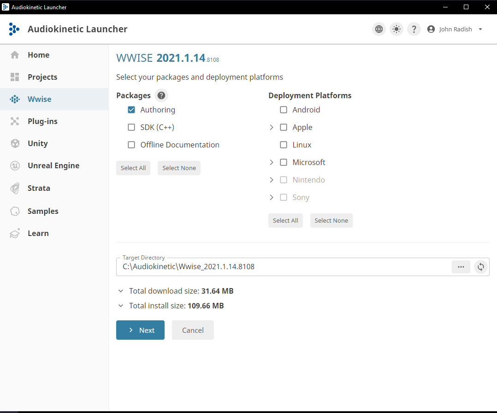
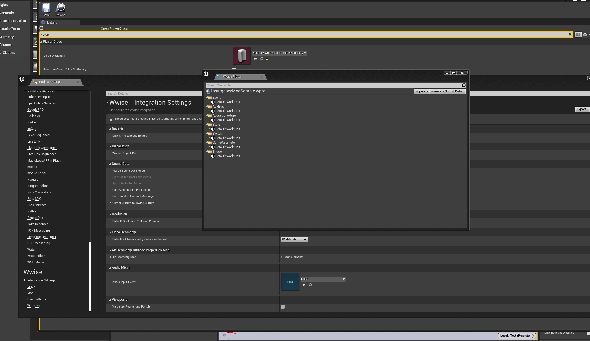
Editor basics (new to the editor? read this)
Content Browser is the file panel, usually docked at the bottom of the editor. If it's not open: Window → Content Browser → Content Browser 1. Its left-side tree has the top Content folder ("main Content": base game plus your Wwise assets) and one <YourMod> Content folder per mod.
Use two Content Browsers. Open a second one with Window → Content Browser → Content Browser 2, and drag it out of its docked spot so both sit side by side: base game files in one, your mod folder in the other. To copy something into your mod, drag it from one window into the other and pick Copy Here. To rename anything, select it and press F2 (or right-click → Rename).
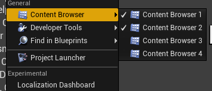
Window → Content Browser → Content Browser 2 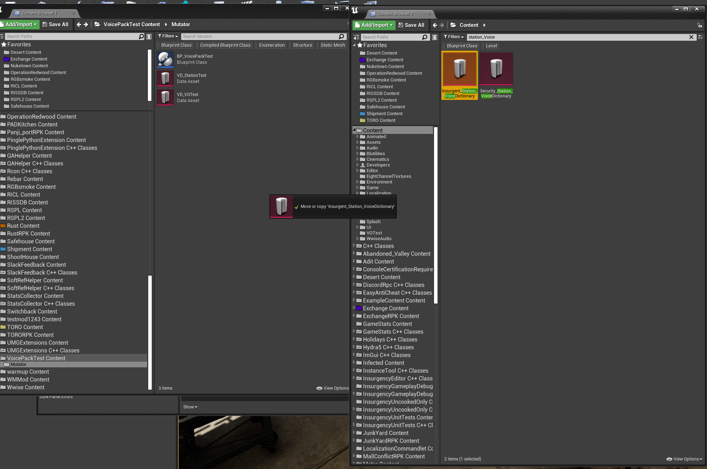
Two Content Browsers side by side: dragging a base dictionary into the mod folder 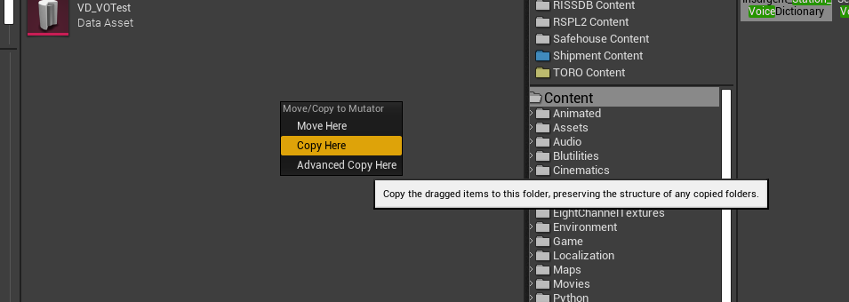
Drop it on the folder and pick Copy Here Create your mod: toolbar mod.io button → Create Mod → type a name → Create Mod. Only the name matters. The editor then opens the mod's folder.
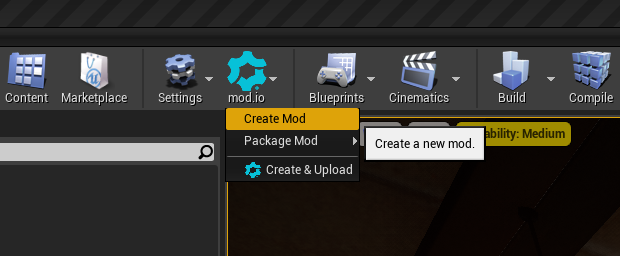
mod.io button → Create Mod 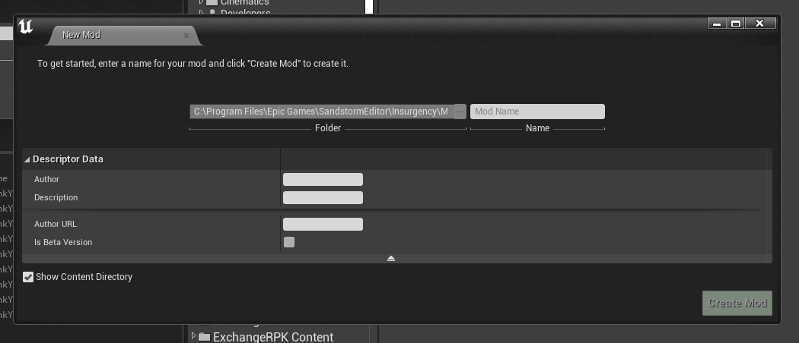
The New Mod window: type a name, then Create Mod Where everything goes (the most common mix-up):
Content/
MyVoicePack/ ← Wwise event + bank (main Content)
YourMod/ ← the mod
CC_VOICE_MyPack ← voice cosmetic
ModData_YourMod
Mutators/
BP_VoicePack ← mutator
VD_MyPack ← dictionary copyTest map
A small map for testing your mod in the editor (section 6). Download it once now.
Unzip it into your SDK's Mods folder:
C:\Program Files\Epic Games\SandstormEditor\Insurgency\ModsRestart the editor. It shows up in the Content Browser as TestSite Content, with the map in its
Mapsfolder.
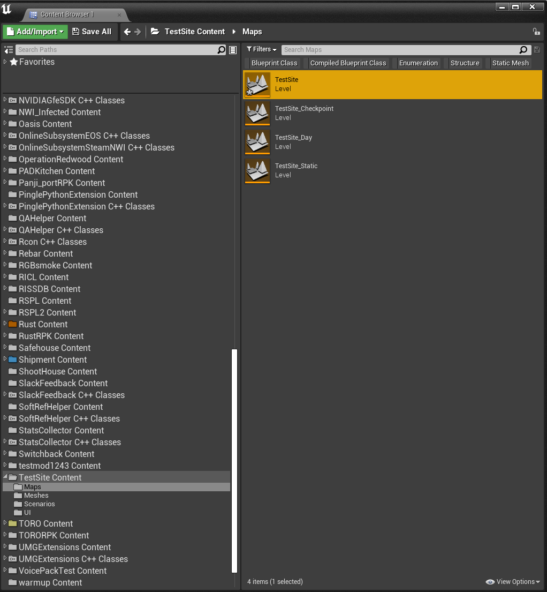
2. Build the audio in Wwise
Each voice line becomes a Wwise sound with a Play event, and all of them go into one SoundBank. Wwise only accepts WAV files.
Audio tab → right-click Actor-Mixer Hierarchy → Default Work Unit → New Child → Work Unit (e.g.
MyVoicePack).Right-click the work unit → Import Audio Files (Shift+I) → add your WAVs → Import. Leave the import type as Sound SFX. Sound Voice puts files in per-language folders, which is extra packaging risk for no gain here.
Select each sound. In the Property Editor (F5 for the Designer layout) → General Settings → Output Bus → ... →
VO. Use thePlayer_Voiceattenuation (Positioning tab) if you want falloff to match the base game.Right-click each sound → New Event → Play. The event is named
Play_<sound name>.SoundBanks tab → right-click Default Work Unit → New Child → SoundBank (e.g.
MyVoicePack). Remember the exact name.Press F7 for the SoundBank layout. Drag your events from the Event Viewer into the bank's Add list. Events, Structures and Media should all be ticked.
SoundBank Manager: tick your bank, platform Windows, language English(US) → Generate Selected. Save with Ctrl+S.
Tips: the work unit and sounds go under Actor-Mixer Hierarchy, not Master-Mixer Hierarchy (that one holds buses). If F5 doesn't bring up the Property Editor, click inside the Wwise window first or use the top menu Layouts → Designer, then single-click your sound.
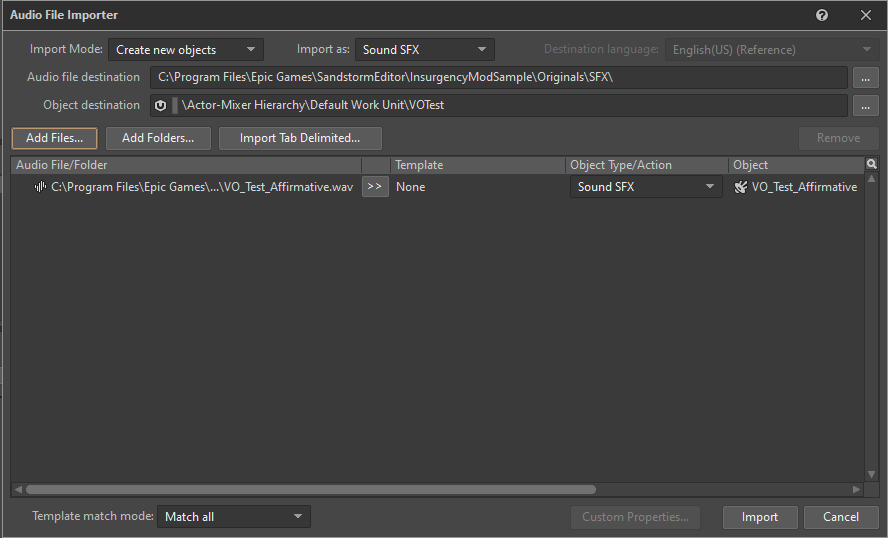
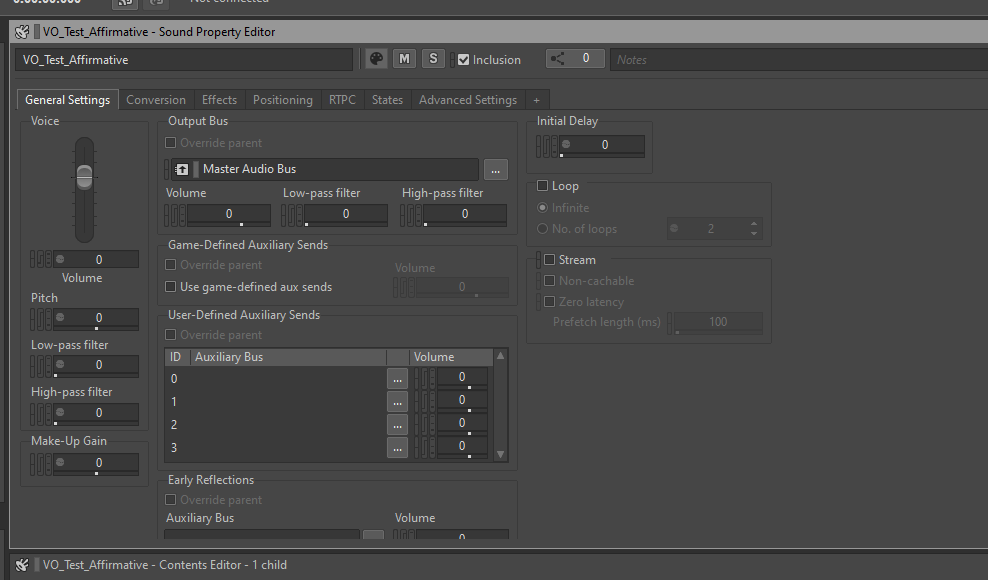
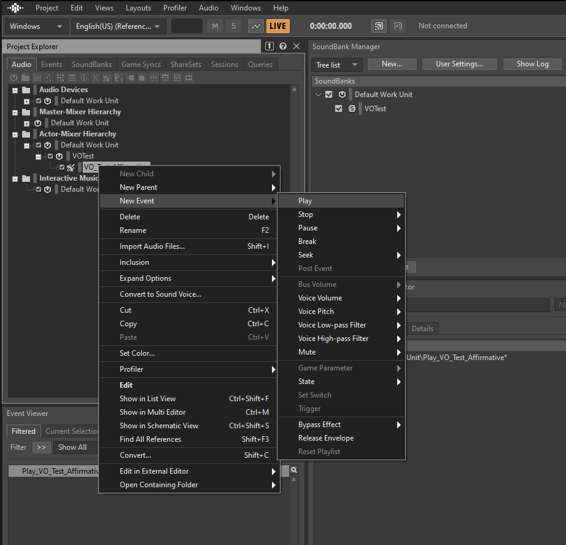
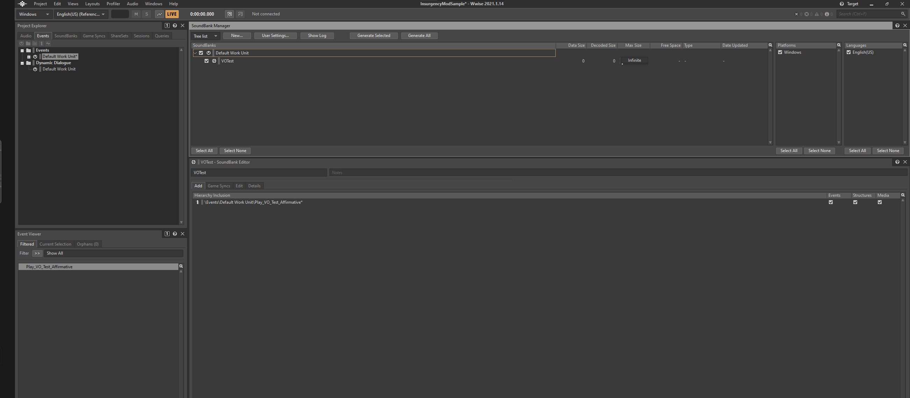
3. Bring it into the SDK
The events and bank need matching assets in the main Content folder, not inside your mod folder.
In Windows Explorer, set
SandstormEditor\Insurgency\Content\WwiseAudioto Read-only. This protects the base game's banks.Content Browser → make a folder in the main
Content(e.g.Content/MyVoicePack).Window → Wwise Picker → Populate → drag your events from Event → Default Work Unit into that folder. Don't press Generate Sound Data... in the picker.
Right-click in the same folder → Audiokinetic → Audiokinetic Bank. Give it the exact same name as the Wwise bank.
Open each event → set Required Bank to that bank → save.
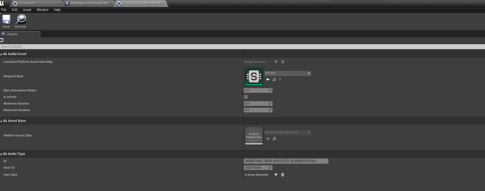
An event with Required Bank set to its bank Right-click the bank → Generate Selected SoundBank. An error about the Init bank is expected and harmless (it's read-only). Then save everything with Ctrl+Shift+S.
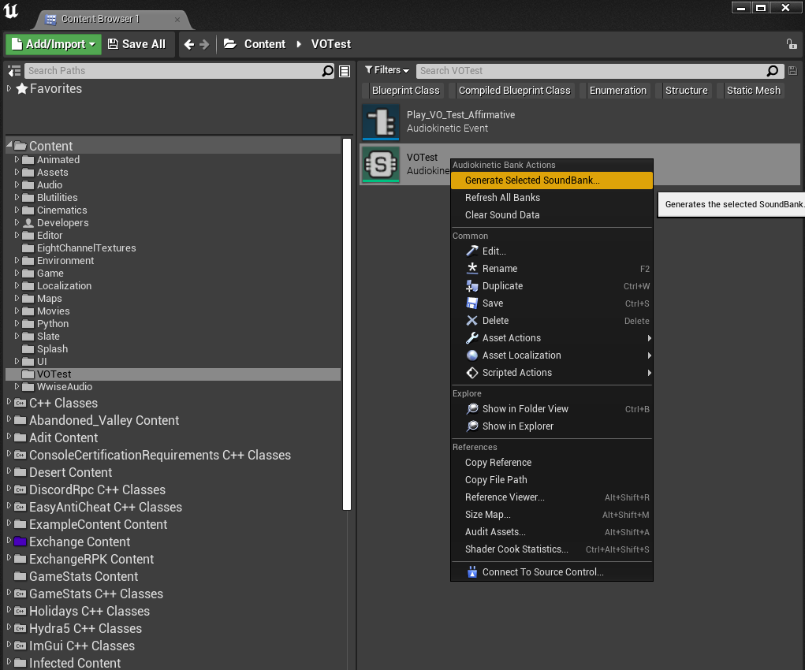
Right-click the bank → Generate Selected SoundBank
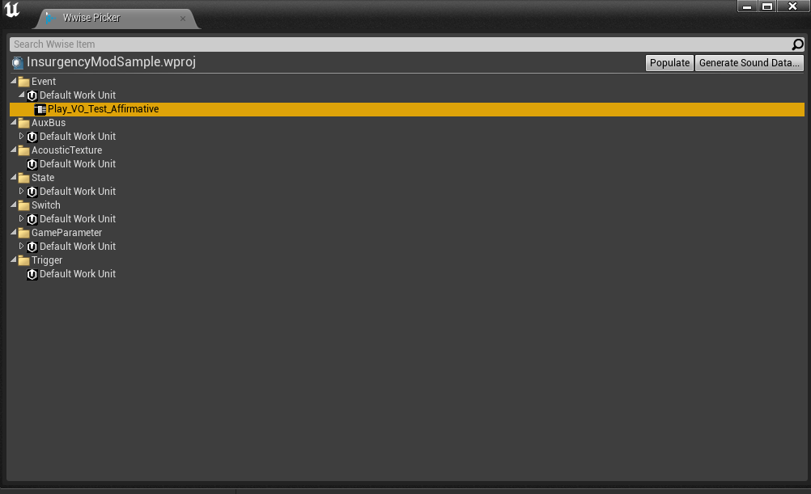
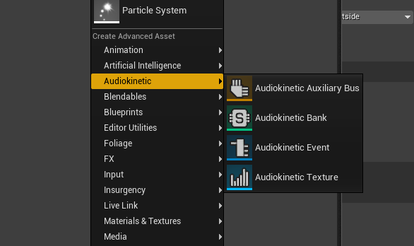
4. Make a voice dictionary
Copy the base voice closest to yours and swap only the slots you've recorded. Slots you leave alone keep playing the original voice.
Find a base dictionary in
Game/Data/Dialogue/, e.g.Security_AmericanMale_VoiceDictionary.Drag it into your mod's content folder in your second Content Browser and pick Copy Here (see Editor basics). Select the copy and press F2 to rename it (e.g.
VD_MyVoicePack).Open it. Use the details search box to find a line, e.g.
afffinds the radial Affirmative entry.Set that entry's Event to your event.
Save the dictionary after your events have their Required Bank set. The dictionary caches its audio data when it saves.
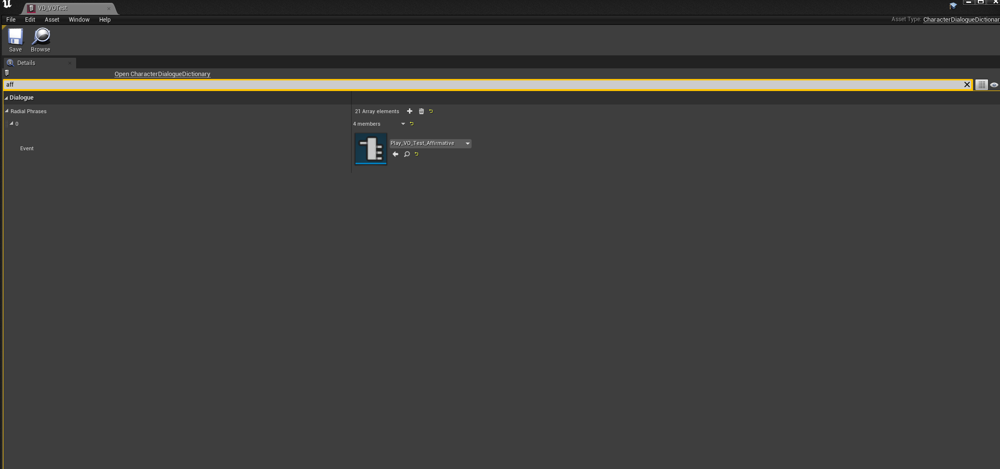
The dictionary is grouped into Radial Phrases, chatter, bot phrases, game mode and objective phrases, fire support phrases and breathing. Each entry is one ECharacterResponse mapped to one event, so the base event names (Play_SecAmericanMale1_Radial_Affirmative) tell you what to record for each slot.
5. Make the game use it
There are two ways. Option A is proven in game and needs your own PlayerClasses, which means a theater. Option B is a standalone mutator that works with the stock classes, also tested in game on a dedicated server.
Option A: PlayerClass override (tested)
Every PlayerClass asset has two fields built for this:
Field | Tooltip in the SDK |
|---|---|
| "If specified, this class will try to use this voice" |
| "Should we override faction dictionaries with custom class dictionaries?" |
Open your mod's PlayerClass (search
voicein its details panel).Set Voice Dictionary to your dictionary and tick Prioritize Class Voice Dictionary. Save.
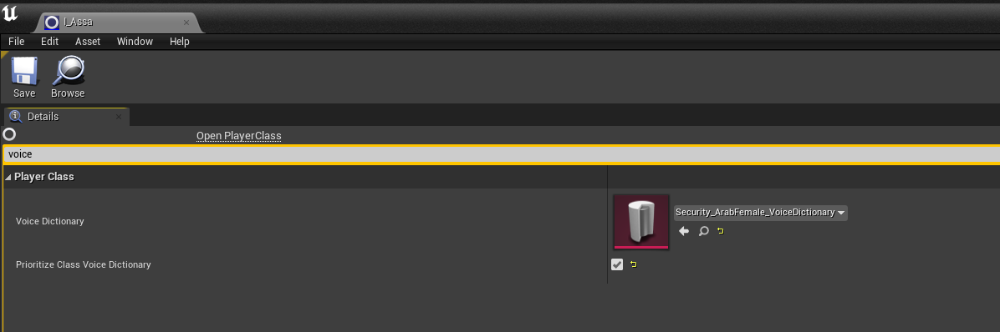
The game doesn't check that the voice matches the class's faction: a Security dictionary on an Insurgent class plays fine. The downside is that it only applies to classes your mod defines, so you need a theater with custom classes.
Option B: standalone mutator for stock classes (tested)
On the server, AINSSoldier::UpdatePlayerAppearance runs the game's voice picker. It uses the first Voice cosmetic in PlayerState.Cosmetics (the player's chosen cosmetics), unless the PlayerClass has Prioritize ticked. With no cosmetic voice it falls back to the class's dictionary, then a random faction voice. The result goes into the soldier's replicated DialogueDictionary.
So a mutator puts your voice cosmetic first in that list and then makes the soldier refresh. INSSoldier → AddCosmetic does not work for this: it only changes the visible meshes.
Duplicate
Game/Collectibles/Cosmetics/Character/Voice/CC_SEC_VOICE_AmericanMale01into your mod asCC_VOICE_MyPack. In Class Defaults, set Voice Dictionary to your dictionary.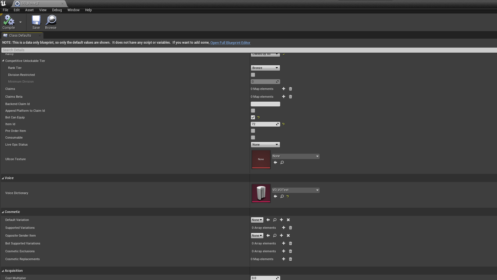
The voice cosmetic's Class Defaults with Voice Dictionary set to your dictionary In your mod's Content folder, right-click → New Folder and name it
Mutators. Open it, right-click → Blueprint Class, search Mutator, pick it and name it (e.g.BP_VoicePack). Then build this graph in its Event Graph:
Event OnPlayerSpawned (Soldier, NewPlayer)
→ Soldier → Get Player State → Cast To INSPlayerState
→ Load Class Asset Blocking (Asset Class = CC_VOICE_MyPack)
→ Set <mutator variable> = its Return Value
→ Branch (Condition = Cosmetics → Contains Item (that same SelectedCosmetic))
False → As INSPlayerState → Cosmetics (Get) → Insert
Item = Make SelectedCosmetic (Cosmetic = CC_VOICE_MyPack)
Index = 0
→ Soldier → Invalidate Player Appearance (Clear Cosmetic Cache = true)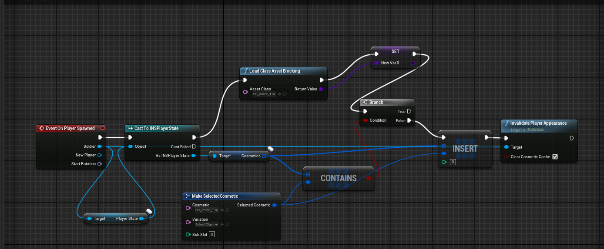
Shortcut: Blueprint nodes copy as text. Open the box below, click Copy graph, click in your mutator's Event Graph and press Ctrl+V. Then set the cosmetic on Load Class Asset Blocking and Make SelectedCosmetic to your own. The Set node needs its variable: right-click it → Create Variable.
Blueprint text: player voice mutator (Option B)click to show
Begin Object Class=/Script/BlueprintGraph.K2Node_Event Name="K2Node_Event_2"
EventReference=(MemberParent=Class'"/Script/Insurgency.Mutator"',MemberName="OnPlayerSpawned")
bOverrideFunction=True
NodePosX=-1088
NodePosY=-576
NodeGuid=A9588E5844AE5D26AAB69BB4AEBBC84E
CustomProperties Pin (PinId=D58A272B4631A05160BDAC9A8DB5D0E7,PinName="OutputDelegate",Direction="EGPD_Output",PinType.PinCategory="delegate",PinType.PinSubCategory="",PinType.PinSubCategoryObject=None,PinType.PinSubCategoryMemberReference=(MemberParent=Class'"/Script/Insurgency.Mutator"',MemberName="OnPlayerSpawned"),PinType.PinValueType=(),PinType.ContainerType=None,PinType.bIsReference=False,PinType.bIsConst=False,PinType.bIsWeakPointer=False,PinType.bIsUObjectWrapper=False,PersistentGuid=00000000000000000000000000000000,bHidden=False,bNotConnectable=False,bDefaultValueIsReadOnly=False,bDefaultValueIsIgnored=False,bAdvancedView=False,bOrphanedPin=False,)
CustomProperties Pin (PinId=897F85BA43F4EDFCE2F25899F592647A,PinName="then",Direction="EGPD_Output",PinType.PinCategory="exec",PinType.PinSubCategory="",PinType.PinSubCategoryObject=None,PinType.PinSubCategoryMemberReference=(),PinType.PinValueType=(),PinType.ContainerType=None,PinType.bIsReference=False,PinType.bIsConst=False,PinType.bIsWeakPointer=False,PinType.bIsUObjectWrapper=False,LinkedTo=(K2Node_DynamicCast_0 373E51FB4EF8C12E3AA40C96C790CB4C,),PersistentGuid=00000000000000000000000000000000,bHidden=False,bNotConnectable=False,bDefaultValueIsReadOnly=False,bDefaultValueIsIgnored=False,bAdvancedView=False,bOrphanedPin=False,)
CustomProperties Pin (PinId=94D0395C4060D8B6D5990C8431E4E093,PinName="Soldier",PinToolTip="Soldier\nINSSoldier Object Reference",Direction="EGPD_Output",PinType.PinCategory="object",PinType.PinSubCategory="",PinType.PinSubCategoryObject=Class'"/Script/Insurgency.INSSoldier"',PinType.PinSubCategoryMemberReference=(),PinType.PinValueType=(),PinType.ContainerType=None,PinType.bIsReference=False,PinType.bIsConst=False,PinType.bIsWeakPointer=False,PinType.bIsUObjectWrapper=False,LinkedTo=(K2Node_VariableGet_0 46757E1043355E24892911B40A20DE1A,K2Node_Knot_9 4FACBEAC4DE7117FC2B44A9544859390,),PersistentGuid=00000000000000000000000000000000,bHidden=False,bNotConnectable=False,bDefaultValueIsReadOnly=False,bDefaultValueIsIgnored=False,bAdvancedView=False,bOrphanedPin=False,)
CustomProperties Pin (PinId=6B4F9E014E0558F2EA3B05916E735556,PinName="NewPlayer",PinToolTip="New Player\nController Object Reference",Direction="EGPD_Output",PinType.PinCategory="object",PinType.PinSubCategory="",PinType.PinSubCategoryObject=Class'"/Script/Engine.Controller"',PinType.PinSubCategoryMemberReference=(),PinType.PinValueType=(),PinType.ContainerType=None,PinType.bIsReference=False,PinType.bIsConst=False,PinType.bIsWeakPointer=False,PinType.bIsUObjectWrapper=False,PersistentGuid=00000000000000000000000000000000,bHidden=False,bNotConnectable=False,bDefaultValueIsReadOnly=False,bDefaultValueIsIgnored=False,bAdvancedView=False,bOrphanedPin=False,)
CustomProperties Pin (PinId=ED5604094B81CD9AA3502489A2046FB9,PinName="StartRotation",PinToolTip="Start Rotation\nRotator (by ref)",Direction="EGPD_Output",PinType.PinCategory="struct",PinType.PinSubCategory="",PinType.PinSubCategoryObject=ScriptStruct'"/Script/CoreUObject.Rotator"',PinType.PinSubCategoryMemberReference=(),PinType.PinValueType=(),PinType.ContainerType=None,PinType.bIsReference=True,PinType.bIsConst=True,PinType.bIsWeakPointer=False,PinType.bIsUObjectWrapper=False,DefaultValue="0, 0, 0",AutogeneratedDefaultValue="0, 0, 0",PersistentGuid=00000000000000000000000000000000,bHidden=False,bNotConnectable=False,bDefaultValueIsReadOnly=False,bDefaultValueIsIgnored=False,bAdvancedView=False,bOrphanedPin=False,)
End Object
Begin Object Class=/Script/BlueprintGraph.K2Node_MakeStruct Name="K2Node_MakeStruct_0"
bMadeAfterOverridePinRemoval=True
ShowPinForProperties(0)=(PropertyName="Cosmetic",PropertyFriendlyName="Cosmetic",PropertyTooltip=NSLOCTEXT("", "40AFC4BA4C9952878CC9C8994672A67C", "Selected cosmetic item"),CategoryName="SelectedCosmetic",bShowPin=True,bCanToggleVisibility=True)
ShowPinForProperties(1)=(PropertyName="Variation",PropertyFriendlyName="Variation",PropertyTooltip=NSLOCTEXT("", "44D742074D04CE0BD5F79A81BFF8C730", "The selected variation, this can be null if the item does not support variations"),CategoryName="SelectedCosmetic",bShowPin=True,bCanToggleVisibility=True)
ShowPinForProperties(2)=(PropertyName="SubSlot",PropertyFriendlyName="Sub Slot",PropertyTooltip=NSLOCTEXT("", "AB08E6DF4329DCED6F667CB6BBC5526D", "Sub Slot"),CategoryName="SelectedCosmetic",bShowPin=True,bCanToggleVisibility=True)
StructType=ScriptStruct'"/Script/Insurgency.SelectedCosmetic"'
NodePosX=-576
NodePosY=-336
NodeGuid=575E94964B2784DDF73B609BA56E74DA
CustomProperties Pin (PinId=F49726AB43ACABCFEADFB5B585EFA951,PinName="SelectedCosmetic",Direction="EGPD_Output",PinType.PinCategory="struct",PinType.PinSubCategory="",PinType.PinSubCategoryObject=ScriptStruct'"/Script/Insurgency.SelectedCosmetic"',PinType.PinSubCategoryMemberReference=(),PinType.PinValueType=(),PinType.ContainerType=None,PinType.bIsReference=False,PinType.bIsConst=False,PinType.bIsWeakPointer=False,PinType.bIsUObjectWrapper=False,LinkedTo=(K2Node_CallArrayFunction_0 5E7785A04CD7EEE1F80C1FBF58A7098D,K2Node_CallArrayFunction_1 7D768A8E46727B19BD890B854E857C88,),PersistentGuid=00000000000000000000000000000000,bHidden=False,bNotConnectable=False,bDefaultValueIsReadOnly=False,bDefaultValueIsIgnored=False,bAdvancedView=False,bOrphanedPin=False,)
CustomProperties Pin (PinId=F12687074D4C6DC4283AE4AFA21B363F,PinName="Cosmetic",PinFriendlyName=NSLOCTEXT("", "F48E5AB0402C619895077086F2B0F358", "Cosmetic"),PinToolTip="Cosmetic\nCosmetic Item Soft Class Reference\n\nSelected cosmetic item",PinType.PinCategory="softclass",PinType.PinSubCategory="",PinType.PinSubCategoryObject=Class'"/Script/Insurgency.CosmeticItem"',PinType.PinSubCategoryMemberReference=(),PinType.PinValueType=(),PinType.ContainerType=None,PinType.bIsReference=False,PinType.bIsConst=False,PinType.bIsWeakPointer=False,PinType.bIsUObjectWrapper=True,DefaultValue="/VoicePackTest/CC_Voice_T.CC_Voice_T_C",PersistentGuid=00000000000000000000000000000000,bHidden=False,bNotConnectable=False,bDefaultValueIsReadOnly=False,bDefaultValueIsIgnored=False,bAdvancedView=False,bOrphanedPin=False,)
CustomProperties Pin (PinId=35E7259C43E3A6AF0AC70FB0ACF56DE1,PinName="Variation",PinFriendlyName=NSLOCTEXT("", "6092EA8A4A52D3A8071017B6ACA860E8", "Variation"),PinToolTip="Variation\nCosmetic Variation Soft Class Reference\n\nThe selected variation, this can be null if the item does not support variations",PinType.PinCategory="softclass",PinType.PinSubCategory="",PinType.PinSubCategoryObject=Class'"/Script/Insurgency.CosmeticVariation"',PinType.PinSubCategoryMemberReference=(),PinType.PinValueType=(),PinType.ContainerType=None,PinType.bIsReference=False,PinType.bIsConst=False,PinType.bIsWeakPointer=False,PinType.bIsUObjectWrapper=True,PersistentGuid=00000000000000000000000000000000,bHidden=False,bNotConnectable=False,bDefaultValueIsReadOnly=False,bDefaultValueIsIgnored=False,bAdvancedView=False,bOrphanedPin=False,)
CustomProperties Pin (PinId=3E43A2D74A2F9D05DE30EDBD6979A85B,PinName="SubSlot",PinFriendlyName=NSLOCTEXT("", "C00049A84F0134BDE55AD48AF80B0D11", "Sub Slot"),PinToolTip="Sub Slot\nInteger\n\nSub Slot",PinType.PinCategory="int",PinType.PinSubCategory="",PinType.PinSubCategoryObject=None,PinType.PinSubCategoryMemberReference=(),PinType.PinValueType=(),PinType.ContainerType=None,PinType.bIsReference=False,PinType.bIsConst=False,PinType.bIsWeakPointer=False,PinType.bIsUObjectWrapper=False,DefaultValue="0",AutogeneratedDefaultValue="0",PersistentGuid=00000000000000000000000000000000,bHidden=False,bNotConnectable=False,bDefaultValueIsReadOnly=False,bDefaultValueIsIgnored=False,bAdvancedView=False,bOrphanedPin=False,)
End Object
Begin Object Class=/Script/BlueprintGraph.K2Node_VariableGet Name="K2Node_VariableGet_0"
VariableReference=(MemberParent=Class'"/Script/Engine.Pawn"',MemberName="PlayerState")
SelfContextInfo=NotSelfContext
NodePosX=-1088
NodePosY=-608
NodeGuid=57C8D79F44A5302DFF96C1990050A0F2
CustomProperties Pin (PinId=D38DB3884B0E8C7E23CC229F93C14CC2,PinName="PlayerState",PinFriendlyName=NSLOCTEXT("UObjectDisplayNames", "Pawn:PlayerState", "Player State"),Direction="EGPD_Output",PinType.PinCategory="object",PinType.PinSubCategory="",PinType.PinSubCategoryObject=Class'"/Script/Engine.PlayerState"',PinType.PinSubCategoryMemberReference=(),PinType.PinValueType=(),PinType.ContainerType=None,PinType.bIsReference=False,PinType.bIsConst=False,PinType.bIsWeakPointer=False,PinType.bIsUObjectWrapper=False,LinkedTo=(K2Node_Knot_13 7A6CC551493BECF1D8BDB3B2D2CE9156,),PersistentGuid=00000000000000000000000000000000,bHidden=False,bNotConnectable=False,bDefaultValueIsReadOnly=False,bDefaultValueIsIgnored=False,bAdvancedView=False,bOrphanedPin=False,)
CustomProperties Pin (PinId=46757E1043355E24892911B40A20DE1A,PinName="self",PinFriendlyName=NSLOCTEXT("K2Node", "Target", "Target"),PinType.PinCategory="object",PinType.PinSubCategory="",PinType.PinSubCategoryObject=Class'"/Script/Engine.Pawn"',PinType.PinSubCategoryMemberReference=(),PinType.PinValueType=(),PinType.ContainerType=None,PinType.bIsReference=False,PinType.bIsConst=False,PinType.bIsWeakPointer=False,PinType.bIsUObjectWrapper=False,LinkedTo=(K2Node_Event_2 94D0395C4060D8B6D5990C8431E4E093,),PersistentGuid=00000000000000000000000000000000,bHidden=False,bNotConnectable=False,bDefaultValueIsReadOnly=False,bDefaultValueIsIgnored=False,bAdvancedView=False,bOrphanedPin=False,)
End Object
Begin Object Class=/Script/BlueprintGraph.K2Node_DynamicCast Name="K2Node_DynamicCast_0"
TargetType=Class'"/Script/Insurgency.INSPlayerState"'
NodePosX=-768
NodePosY=-576
NodeGuid=9425DCB4414EC39124EBD0946DE32BAB
CustomProperties Pin (PinId=373E51FB4EF8C12E3AA40C96C790CB4C,PinName="execute",PinType.PinCategory="exec",PinType.PinSubCategory="",PinType.PinSubCategoryObject=None,PinType.PinSubCategoryMemberReference=(),PinType.PinValueType=(),PinType.ContainerType=None,PinType.bIsReference=False,PinType.bIsConst=False,PinType.bIsWeakPointer=False,PinType.bIsUObjectWrapper=False,LinkedTo=(K2Node_Event_2 897F85BA43F4EDFCE2F25899F592647A,),PersistentGuid=00000000000000000000000000000000,bHidden=False,bNotConnectable=False,bDefaultValueIsReadOnly=False,bDefaultValueIsIgnored=False,bAdvancedView=False,bOrphanedPin=False,)
CustomProperties Pin (PinId=BFE6E397443E7992C4822F9DFF5E7806,PinName="then",Direction="EGPD_Output",PinType.PinCategory="exec",PinType.PinSubCategory="",PinType.PinSubCategoryObject=None,PinType.PinSubCategoryMemberReference=(),PinType.PinValueType=(),PinType.ContainerType=None,PinType.bIsReference=False,PinType.bIsConst=False,PinType.bIsWeakPointer=False,PinType.bIsUObjectWrapper=False,LinkedTo=(K2Node_CallFunction_2 FB97176149B9416ED8FD88AD817568CB,),PersistentGuid=00000000000000000000000000000000,bHidden=False,bNotConnectable=False,bDefaultValueIsReadOnly=False,bDefaultValueIsIgnored=False,bAdvancedView=False,bOrphanedPin=False,)
CustomProperties Pin (PinId=5858008547F35EB42DCB6C9356A9F7C3,PinName="CastFailed",Direction="EGPD_Output",PinType.PinCategory="exec",PinType.PinSubCategory="",PinType.PinSubCategoryObject=None,PinType.PinSubCategoryMemberReference=(),PinType.PinValueType=(),PinType.ContainerType=None,PinType.bIsReference=False,PinType.bIsConst=False,PinType.bIsWeakPointer=False,PinType.bIsUObjectWrapper=False,PersistentGuid=00000000000000000000000000000000,bHidden=False,bNotConnectable=False,bDefaultValueIsReadOnly=False,bDefaultValueIsIgnored=False,bAdvancedView=False,bOrphanedPin=False,)
CustomProperties Pin (PinId=04F81B5546E999880D3A4E8C6FE755C2,PinName="Object",PinType.PinCategory="object",PinType.PinSubCategory="",PinType.PinSubCategoryObject=Class'"/Script/CoreUObject.Object"',PinType.PinSubCategoryMemberReference=(),PinType.PinValueType=(),PinType.ContainerType=None,PinType.bIsReference=False,PinType.bIsConst=False,PinType.bIsWeakPointer=False,PinType.bIsUObjectWrapper=False,LinkedTo=(K2Node_Knot_13 2050094847EB4B15E5C7BC891BDC0D7F,),PersistentGuid=00000000000000000000000000000000,bHidden=False,bNotConnectable=False,bDefaultValueIsReadOnly=False,bDefaultValueIsIgnored=False,bAdvancedView=False,bOrphanedPin=False,)
CustomProperties Pin (PinId=D34636E9403D9C46323B55AA4F2ACFCD,PinName="AsINSPlayer State",Direction="EGPD_Output",PinType.PinCategory="Object",PinType.PinSubCategory="",PinType.PinSubCategoryObject=Class'"/Script/Insurgency.INSPlayerState"',PinType.PinSubCategoryMemberReference=(),PinType.PinValueType=(),PinType.ContainerType=None,PinType.bIsReference=False,PinType.bIsConst=False,PinType.bIsWeakPointer=False,PinType.bIsUObjectWrapper=False,LinkedTo=(K2Node_Knot_12 6DCC5E0845BB628487F021866D5C34CE,),PersistentGuid=00000000000000000000000000000000,bHidden=False,bNotConnectable=False,bDefaultValueIsReadOnly=False,bDefaultValueIsIgnored=False,bAdvancedView=False,bOrphanedPin=False,)
CustomProperties Pin (PinId=62FA28E14D94CADDBAF57EBBB4788289,PinName="bSuccess",Direction="EGPD_Output",PinType.PinCategory="bool",PinType.PinSubCategory="",PinType.PinSubCategoryObject=None,PinType.PinSubCategoryMemberReference=(),PinType.PinValueType=(),PinType.ContainerType=None,PinType.bIsReference=False,PinType.bIsConst=False,PinType.bIsWeakPointer=False,PinType.bIsUObjectWrapper=False,PersistentGuid=00000000000000000000000000000000,bHidden=True,bNotConnectable=False,bDefaultValueIsReadOnly=False,bDefaultValueIsIgnored=False,bAdvancedView=False,bOrphanedPin=False,)
End Object
Begin Object Class=/Script/BlueprintGraph.K2Node_VariableGet Name="K2Node_VariableGet_1"
VariableReference=(MemberParent=Class'"/Script/Insurgency.INSPlayerState"',MemberName="Cosmetics")
SelfContextInfo=NotSelfContext
NodePosX=-736
NodePosY=-464
NodeGuid=838DC32A434BF89014F661A4CC39C358
CustomProperties Pin (PinId=D3D171614DB06AC2745E469671C80123,PinName="Cosmetics",PinFriendlyName=NSLOCTEXT("", "E113BA8D4CC306CBFD3FA486CAA4FD1A", "Cosmetics"),Direction="EGPD_Output",PinType.PinCategory="struct",PinType.PinSubCategory="",PinType.PinSubCategoryObject=ScriptStruct'"/Script/Insurgency.SelectedCosmetic"',PinType.PinSubCategoryMemberReference=(),PinType.PinValueType=(),PinType.ContainerType=Array,PinType.bIsReference=False,PinType.bIsConst=False,PinType.bIsWeakPointer=False,PinType.bIsUObjectWrapper=False,LinkedTo=(K2Node_CallArrayFunction_1 F57260114C68BCA0A5BCD29EE7D29798,K2Node_Knot_15 8E59002E4DBF6C1A6C9174ADF7D815FD,),PersistentGuid=00000000000000000000000000000000,bHidden=False,bNotConnectable=False,bDefaultValueIsReadOnly=False,bDefaultValueIsIgnored=False,bAdvancedView=False,bOrphanedPin=False,)
CustomProperties Pin (PinId=27E181D54645ED313C514D8C74E8A0EB,PinName="self",PinFriendlyName=NSLOCTEXT("K2Node", "Target", "Target"),PinType.PinCategory="object",PinType.PinSubCategory="",PinType.PinSubCategoryObject=Class'"/Script/Insurgency.INSPlayerState"',PinType.PinSubCategoryMemberReference=(),PinType.PinValueType=(),PinType.ContainerType=None,PinType.bIsReference=False,PinType.bIsConst=False,PinType.bIsWeakPointer=False,PinType.bIsUObjectWrapper=False,LinkedTo=(K2Node_Knot_12 1572599A4286B11E40F40AAE7BD2BE68,),PersistentGuid=00000000000000000000000000000000,bHidden=False,bNotConnectable=False,bDefaultValueIsReadOnly=False,bDefaultValueIsIgnored=False,bAdvancedView=False,bOrphanedPin=False,)
End Object
Begin Object Class=/Script/BlueprintGraph.K2Node_CallArrayFunction Name="K2Node_CallArrayFunction_0"
FunctionReference=(MemberParent=Class'"/Script/Engine.KismetArrayLibrary"',MemberName="Array_Insert")
NodePosX=-48
NodePosY=-352
NodeGuid=AF81211246676B39E40B68A913801CAB
CustomProperties Pin (PinId=1B2E8F414C7A0FEFC8FA42B23F91FD72,PinName="execute",PinToolTip="\nExec",PinType.PinCategory="exec",PinType.PinSubCategory="",PinType.PinSubCategoryObject=None,PinType.PinSubCategoryMemberReference=(),PinType.PinValueType=(),PinType.ContainerType=None,PinType.bIsReference=False,PinType.bIsConst=False,PinType.bIsWeakPointer=False,PinType.bIsUObjectWrapper=False,LinkedTo=(K2Node_IfThenElse_0 AEA5AD2F40565E547EE0DAAF146B2FE4,),PersistentGuid=00000000000000000000000000000000,bHidden=False,bNotConnectable=False,bDefaultValueIsReadOnly=False,bDefaultValueIsIgnored=False,bAdvancedView=False,bOrphanedPin=False,)
CustomProperties Pin (PinId=EB42BA36495473ED39684CA55F331C3E,PinName="then",PinToolTip="\nExec",Direction="EGPD_Output",PinType.PinCategory="exec",PinType.PinSubCategory="",PinType.PinSubCategoryObject=None,PinType.PinSubCategoryMemberReference=(),PinType.PinValueType=(),PinType.ContainerType=None,PinType.bIsReference=False,PinType.bIsConst=False,PinType.bIsWeakPointer=False,PinType.bIsUObjectWrapper=False,LinkedTo=(K2Node_CallFunction_1 4C074FE145979A4803C0E09D996B05D2,),PersistentGuid=00000000000000000000000000000000,bHidden=False,bNotConnectable=False,bDefaultValueIsReadOnly=False,bDefaultValueIsIgnored=False,bAdvancedView=False,bOrphanedPin=False,)
CustomProperties Pin (PinId=CF77987A49D3771AB50940926010F61F,PinName="self",PinFriendlyName=NSLOCTEXT("K2Node", "Target", "Target"),PinToolTip="Target\nKismet Array Library Object Reference",PinType.PinCategory="object",PinType.PinSubCategory="",PinType.PinSubCategoryObject=Class'"/Script/Engine.KismetArrayLibrary"',PinType.PinSubCategoryMemberReference=(),PinType.PinValueType=(),PinType.ContainerType=None,PinType.bIsReference=False,PinType.bIsConst=False,PinType.bIsWeakPointer=False,PinType.bIsUObjectWrapper=False,DefaultObject="/Script/Engine.Default__KismetArrayLibrary",PersistentGuid=00000000000000000000000000000000,bHidden=True,bNotConnectable=False,bDefaultValueIsReadOnly=False,bDefaultValueIsIgnored=False,bAdvancedView=False,bOrphanedPin=False,)
CustomProperties Pin (PinId=1B72158843A2821F6D46729D5EC86D7D,PinName="TargetArray",PinToolTip="Target Array\nArray of Selected Cosmetic Structures\n\nThe array to insert into *",PinType.PinCategory="struct",PinType.PinSubCategory="",PinType.PinSubCategoryObject=ScriptStruct'"/Script/Insurgency.SelectedCosmetic"',PinType.PinSubCategoryMemberReference=(),PinType.PinValueType=(),PinType.ContainerType=Array,PinType.bIsReference=True,PinType.bIsConst=True,PinType.bIsWeakPointer=False,PinType.bIsUObjectWrapper=False,LinkedTo=(K2Node_Knot_15 B51343714F5CC70A477CACA868D86DA8,),PersistentGuid=00000000000000000000000000000000,bHidden=False,bNotConnectable=False,bDefaultValueIsReadOnly=False,bDefaultValueIsIgnored=True,bAdvancedView=False,bOrphanedPin=False,)
CustomProperties Pin (PinId=5E7785A04CD7EEE1F80C1FBF58A7098D,PinName="NewItem",PinToolTip="New Item\nSelected Cosmetic Structure (by ref)\n\nThe item to insert into the array *",PinType.PinCategory="struct",PinType.PinSubCategory="",PinType.PinSubCategoryObject=ScriptStruct'"/Script/Insurgency.SelectedCosmetic"',PinType.PinSubCategoryMemberReference=(),PinType.PinValueType=(),PinType.ContainerType=None,PinType.bIsReference=True,PinType.bIsConst=True,PinType.bIsWeakPointer=False,PinType.bIsUObjectWrapper=False,LinkedTo=(K2Node_MakeStruct_0 F49726AB43ACABCFEADFB5B585EFA951,),PersistentGuid=00000000000000000000000000000000,bHidden=False,bNotConnectable=False,bDefaultValueIsReadOnly=False,bDefaultValueIsIgnored=False,bAdvancedView=False,bOrphanedPin=False,)
CustomProperties Pin (PinId=F4C256884C22E028F1C28D8E52717B82,PinName="Index",PinToolTip="Index\nInteger\n\nThe index at which to insert the item into the array",PinType.PinCategory="int",PinType.PinSubCategory="",PinType.PinSubCategoryObject=None,PinType.PinSubCategoryMemberReference=(),PinType.PinValueType=(),PinType.ContainerType=None,PinType.bIsReference=False,PinType.bIsConst=False,PinType.bIsWeakPointer=False,PinType.bIsUObjectWrapper=False,DefaultValue="0",AutogeneratedDefaultValue="0",PersistentGuid=00000000000000000000000000000000,bHidden=False,bNotConnectable=False,bDefaultValueIsReadOnly=False,bDefaultValueIsIgnored=False,bAdvancedView=False,bOrphanedPin=False,)
End Object
Begin Object Class=/Script/BlueprintGraph.K2Node_CallFunction Name="K2Node_CallFunction_1"
FunctionReference=(MemberParent=Class'"/Script/Insurgency.INSSoldier"',MemberName="InvalidatePlayerAppearance")
NodePosX=176
NodePosY=-384
NodeGuid=F61B09124B54011484D70FAC15CB3D1F
CustomProperties Pin (PinId=4C074FE145979A4803C0E09D996B05D2,PinName="execute",PinToolTip="\nExec",PinType.PinCategory="exec",PinType.PinSubCategory="",PinType.PinSubCategoryObject=None,PinType.PinSubCategoryMemberReference=(),PinType.PinValueType=(),PinType.ContainerType=None,PinType.bIsReference=False,PinType.bIsConst=False,PinType.bIsWeakPointer=False,PinType.bIsUObjectWrapper=False,LinkedTo=(K2Node_CallArrayFunction_0 EB42BA36495473ED39684CA55F331C3E,),PersistentGuid=00000000000000000000000000000000,bHidden=False,bNotConnectable=False,bDefaultValueIsReadOnly=False,bDefaultValueIsIgnored=False,bAdvancedView=False,bOrphanedPin=False,)
CustomProperties Pin (PinId=F4E4A0024F91AF2A514DBB803CC4075B,PinName="then",PinToolTip="\nExec",Direction="EGPD_Output",PinType.PinCategory="exec",PinType.PinSubCategory="",PinType.PinSubCategoryObject=None,PinType.PinSubCategoryMemberReference=(),PinType.PinValueType=(),PinType.ContainerType=None,PinType.bIsReference=False,PinType.bIsConst=False,PinType.bIsWeakPointer=False,PinType.bIsUObjectWrapper=False,PersistentGuid=00000000000000000000000000000000,bHidden=False,bNotConnectable=False,bDefaultValueIsReadOnly=False,bDefaultValueIsIgnored=False,bAdvancedView=False,bOrphanedPin=False,)
CustomProperties Pin (PinId=72695B844DC6EA0A6BF5EBB7C651D5CF,PinName="self",PinFriendlyName=NSLOCTEXT("K2Node", "Target", "Target"),PinToolTip="Target\nINSSoldier Object Reference",PinType.PinCategory="object",PinType.PinSubCategory="",PinType.PinSubCategoryObject=Class'"/Script/Insurgency.INSSoldier"',PinType.PinSubCategoryMemberReference=(),PinType.PinValueType=(),PinType.ContainerType=None,PinType.bIsReference=False,PinType.bIsConst=False,PinType.bIsWeakPointer=False,PinType.bIsUObjectWrapper=False,LinkedTo=(K2Node_Knot_10 3E10963C48D36A5C99EDA3B8B3A575AD,),PersistentGuid=00000000000000000000000000000000,bHidden=False,bNotConnectable=False,bDefaultValueIsReadOnly=False,bDefaultValueIsIgnored=False,bAdvancedView=False,bOrphanedPin=False,)
CustomProperties Pin (PinId=AE9812D942BCECAAC1B366897D976F8D,PinName="bClearCosmeticCache",PinToolTip="Clear Cosmetic Cache\nBoolean",PinType.PinCategory="bool",PinType.PinSubCategory="",PinType.PinSubCategoryObject=None,PinType.PinSubCategoryMemberReference=(),PinType.PinValueType=(),PinType.ContainerType=None,PinType.bIsReference=False,PinType.bIsConst=False,PinType.bIsWeakPointer=False,PinType.bIsUObjectWrapper=False,DefaultValue="true",AutogeneratedDefaultValue="true",PersistentGuid=00000000000000000000000000000000,bHidden=False,bNotConnectable=False,bDefaultValueIsReadOnly=False,bDefaultValueIsIgnored=False,bAdvancedView=False,bOrphanedPin=False,)
End Object
Begin Object Class=/Script/BlueprintGraph.K2Node_CallArrayFunction Name="K2Node_CallArrayFunction_1"
bIsPureFunc=True
FunctionReference=(MemberParent=Class'"/Script/Engine.KismetArrayLibrary"',MemberName="Array_Contains")
NodePosX=-544
NodePosY=-416
NodeGuid=8FC759FF4C3AF02A05A67F8AB998C81B
CustomProperties Pin (PinId=1B69F57E4ED8804745A91C8B7252E511,PinName="self",PinFriendlyName=NSLOCTEXT("K2Node", "Target", "Target"),PinToolTip="Target\nKismet Array Library Object Reference",PinType.PinCategory="object",PinType.PinSubCategory="",PinType.PinSubCategoryObject=Class'"/Script/Engine.KismetArrayLibrary"',PinType.PinSubCategoryMemberReference=(),PinType.PinValueType=(),PinType.ContainerType=None,PinType.bIsReference=False,PinType.bIsConst=False,PinType.bIsWeakPointer=False,PinType.bIsUObjectWrapper=False,DefaultObject="/Script/Engine.Default__KismetArrayLibrary",PersistentGuid=00000000000000000000000000000000,bHidden=True,bNotConnectable=False,bDefaultValueIsReadOnly=False,bDefaultValueIsIgnored=False,bAdvancedView=False,bOrphanedPin=False,)
CustomProperties Pin (PinId=F57260114C68BCA0A5BCD29EE7D29798,PinName="TargetArray",PinToolTip="Target Array\nArray of Selected Cosmetic Structures\n\nThe array to search for the item *",PinType.PinCategory="struct",PinType.PinSubCategory="",PinType.PinSubCategoryObject=ScriptStruct'"/Script/Insurgency.SelectedCosmetic"',PinType.PinSubCategoryMemberReference=(),PinType.PinValueType=(),PinType.ContainerType=Array,PinType.bIsReference=True,PinType.bIsConst=True,PinType.bIsWeakPointer=False,PinType.bIsUObjectWrapper=False,LinkedTo=(K2Node_VariableGet_1 D3D171614DB06AC2745E469671C80123,),PersistentGuid=00000000000000000000000000000000,bHidden=False,bNotConnectable=False,bDefaultValueIsReadOnly=False,bDefaultValueIsIgnored=True,bAdvancedView=False,bOrphanedPin=False,)
CustomProperties Pin (PinId=7D768A8E46727B19BD890B854E857C88,PinName="ItemToFind",PinToolTip="Item to Find\nSelected Cosmetic Structure (by ref)\n\nThe item to look for *",PinType.PinCategory="struct",PinType.PinSubCategory="",PinType.PinSubCategoryObject=ScriptStruct'"/Script/Insurgency.SelectedCosmetic"',PinType.PinSubCategoryMemberReference=(),PinType.PinValueType=(),PinType.ContainerType=None,PinType.bIsReference=True,PinType.bIsConst=True,PinType.bIsWeakPointer=False,PinType.bIsUObjectWrapper=False,LinkedTo=(K2Node_MakeStruct_0 F49726AB43ACABCFEADFB5B585EFA951,),PersistentGuid=00000000000000000000000000000000,bHidden=False,bNotConnectable=False,bDefaultValueIsReadOnly=False,bDefaultValueIsIgnored=False,bAdvancedView=False,bOrphanedPin=False,)
CustomProperties Pin (PinId=9CD9EDBE4D978201A1FB97B8A97E9A74,PinName="ReturnValue",PinToolTip="Return Value\nBoolean\n\nTrue if the item was found within the array",Direction="EGPD_Output",PinType.PinCategory="bool",PinType.PinSubCategory="",PinType.PinSubCategoryObject=None,PinType.PinSubCategoryMemberReference=(),PinType.PinValueType=(),PinType.ContainerType=None,PinType.bIsReference=False,PinType.bIsConst=False,PinType.bIsWeakPointer=False,PinType.bIsUObjectWrapper=False,DefaultValue="false",AutogeneratedDefaultValue="false",LinkedTo=(K2Node_Knot_14 58CE15DB4223A0FFEE0329BE74E18004,),PersistentGuid=00000000000000000000000000000000,bHidden=False,bNotConnectable=False,bDefaultValueIsReadOnly=False,bDefaultValueIsIgnored=False,bAdvancedView=False,bOrphanedPin=False,)
End Object
Begin Object Class=/Script/BlueprintGraph.K2Node_IfThenElse Name="K2Node_IfThenElse_0"
NodePosX=128
NodePosY=-576
NodeGuid=274CE2954DD268C4C5EA429403E8C347
CustomProperties Pin (PinId=C5BA545A41899068BFC86C9CE9787235,PinName="execute",PinType.PinCategory="exec",PinType.PinSubCategory="",PinType.PinSubCategoryObject=None,PinType.PinSubCategoryMemberReference=(),PinType.PinValueType=(),PinType.ContainerType=None,PinType.bIsReference=False,PinType.bIsConst=False,PinType.bIsWeakPointer=False,PinType.bIsUObjectWrapper=False,LinkedTo=(K2Node_VariableSet_0 806A538D46832C4900065285B9F843FA,),PersistentGuid=00000000000000000000000000000000,bHidden=False,bNotConnectable=False,bDefaultValueIsReadOnly=False,bDefaultValueIsIgnored=False,bAdvancedView=False,bOrphanedPin=False,)
CustomProperties Pin (PinId=2264E9BE41785BF1884F029E81B7D64C,PinName="Condition",PinType.PinCategory="bool",PinType.PinSubCategory="",PinType.PinSubCategoryObject=None,PinType.PinSubCategoryMemberReference=(),PinType.PinValueType=(),PinType.ContainerType=None,PinType.bIsReference=False,PinType.bIsConst=False,PinType.bIsWeakPointer=False,PinType.bIsUObjectWrapper=False,DefaultValue="true",AutogeneratedDefaultValue="true",LinkedTo=(K2Node_Knot_14 1CC706154C0DFC6E231942AEBF9851CD,),PersistentGuid=00000000000000000000000000000000,bHidden=False,bNotConnectable=False,bDefaultValueIsReadOnly=False,bDefaultValueIsIgnored=False,bAdvancedView=False,bOrphanedPin=False,)
CustomProperties Pin (PinId=12F6A8D54C89E1DABBA34DA8CD382C10,PinName="then",PinFriendlyName=NSLOCTEXT("K2Node", "true", "true"),Direction="EGPD_Output",PinType.PinCategory="exec",PinType.PinSubCategory="",PinType.PinSubCategoryObject=None,PinType.PinSubCategoryMemberReference=(),PinType.PinValueType=(),PinType.ContainerType=None,PinType.bIsReference=False,PinType.bIsConst=False,PinType.bIsWeakPointer=False,PinType.bIsUObjectWrapper=False,PersistentGuid=00000000000000000000000000000000,bHidden=False,bNotConnectable=False,bDefaultValueIsReadOnly=False,bDefaultValueIsIgnored=False,bAdvancedView=False,bOrphanedPin=False,)
CustomProperties Pin (PinId=AEA5AD2F40565E547EE0DAAF146B2FE4,PinName="else",PinFriendlyName=NSLOCTEXT("K2Node", "false", "false"),Direction="EGPD_Output",PinType.PinCategory="exec",PinType.PinSubCategory="",PinType.PinSubCategoryObject=None,PinType.PinSubCategoryMemberReference=(),PinType.PinValueType=(),PinType.ContainerType=None,PinType.bIsReference=False,PinType.bIsConst=False,PinType.bIsWeakPointer=False,PinType.bIsUObjectWrapper=False,LinkedTo=(K2Node_CallArrayFunction_0 1B2E8F414C7A0FEFC8FA42B23F91FD72,),PersistentGuid=00000000000000000000000000000000,bHidden=False,bNotConnectable=False,bDefaultValueIsReadOnly=False,bDefaultValueIsIgnored=False,bAdvancedView=False,bOrphanedPin=False,)
End Object
Begin Object Class=/Script/BlueprintGraph.K2Node_CallFunction Name="K2Node_CallFunction_2"
FunctionReference=(MemberParent=Class'"/Script/Engine.KismetSystemLibrary"',MemberName="LoadClassAsset_Blocking")
NodePosX=-336
NodePosY=-576
NodeGuid=8401A36E4364FD1E0447CEB602AD947D
CustomProperties Pin (PinId=FB97176149B9416ED8FD88AD817568CB,PinName="execute",PinToolTip="\nExec",PinType.PinCategory="exec",PinType.PinSubCategory="",PinType.PinSubCategoryObject=None,PinType.PinSubCategoryMemberReference=(),PinType.PinValueType=(),PinType.ContainerType=None,PinType.bIsReference=False,PinType.bIsConst=False,PinType.bIsWeakPointer=False,PinType.bIsUObjectWrapper=False,LinkedTo=(K2Node_DynamicCast_0 BFE6E397443E7992C4822F9DFF5E7806,),PersistentGuid=00000000000000000000000000000000,bHidden=False,bNotConnectable=False,bDefaultValueIsReadOnly=False,bDefaultValueIsIgnored=False,bAdvancedView=False,bOrphanedPin=False,)
CustomProperties Pin (PinId=273770484623CAF0B8E93992D54AB50F,PinName="then",PinToolTip="\nExec",Direction="EGPD_Output",PinType.PinCategory="exec",PinType.PinSubCategory="",PinType.PinSubCategoryObject=None,PinType.PinSubCategoryMemberReference=(),PinType.PinValueType=(),PinType.ContainerType=None,PinType.bIsReference=False,PinType.bIsConst=False,PinType.bIsWeakPointer=False,PinType.bIsUObjectWrapper=False,LinkedTo=(K2Node_VariableSet_0 ACF2DC7A4820F2B87987EA8B0A445ABB,),PersistentGuid=00000000000000000000000000000000,bHidden=False,bNotConnectable=False,bDefaultValueIsReadOnly=False,bDefaultValueIsIgnored=False,bAdvancedView=False,bOrphanedPin=False,)
CustomProperties Pin (PinId=A6FE80F44FA6B1E8237AB59A6647727D,PinName="self",PinFriendlyName=NSLOCTEXT("K2Node", "Target", "Target"),PinToolTip="Target\nKismet System Library Object Reference",PinType.PinCategory="object",PinType.PinSubCategory="",PinType.PinSubCategoryObject=Class'"/Script/Engine.KismetSystemLibrary"',PinType.PinSubCategoryMemberReference=(),PinType.PinValueType=(),PinType.ContainerType=None,PinType.bIsReference=False,PinType.bIsConst=False,PinType.bIsWeakPointer=False,PinType.bIsUObjectWrapper=False,DefaultObject="/Script/Engine.Default__KismetSystemLibrary",PersistentGuid=00000000000000000000000000000000,bHidden=True,bNotConnectable=False,bDefaultValueIsReadOnly=False,bDefaultValueIsIgnored=False,bAdvancedView=False,bOrphanedPin=False,)
CustomProperties Pin (PinId=FAEE79214C475A3CC2BDC19171E38FF1,PinName="AssetClass",PinToolTip="Asset Class\nObject Soft Class Reference",PinType.PinCategory="softclass",PinType.PinSubCategory="",PinType.PinSubCategoryObject=Class'"/Script/CoreUObject.Object"',PinType.PinSubCategoryMemberReference=(),PinType.PinValueType=(),PinType.ContainerType=None,PinType.bIsReference=False,PinType.bIsConst=False,PinType.bIsWeakPointer=False,PinType.bIsUObjectWrapper=True,DefaultValue="/VoicePackTest/CC_Voice_T.CC_Voice_T_C",PersistentGuid=00000000000000000000000000000000,bHidden=False,bNotConnectable=False,bDefaultValueIsReadOnly=False,bDefaultValueIsIgnored=False,bAdvancedView=False,bOrphanedPin=False,)
CustomProperties Pin (PinId=FB98B60F408CB7EF741AB89079EE196A,PinName="ReturnValue",PinToolTip="Return Value\nObject Class Reference\n\nResolves or loads a Soft Class Reference immediately, this will cause hitches and Async Load Class Asset should be used if possible",Direction="EGPD_Output",PinType.PinCategory="class",PinType.PinSubCategory="",PinType.PinSubCategoryObject=Class'"/Script/CoreUObject.Object"',PinType.PinSubCategoryMemberReference=(),PinType.PinValueType=(),PinType.ContainerType=None,PinType.bIsReference=False,PinType.bIsConst=False,PinType.bIsWeakPointer=False,PinType.bIsUObjectWrapper=False,LinkedTo=(K2Node_VariableSet_0 F1377186422C3F7A7A84CCB36517B4DC,),PersistentGuid=00000000000000000000000000000000,bHidden=False,bNotConnectable=False,bDefaultValueIsReadOnly=False,bDefaultValueIsIgnored=False,bAdvancedView=False,bOrphanedPin=False,)
End Object
Begin Object Class=/Script/BlueprintGraph.K2Node_VariableSet Name="K2Node_VariableSet_0"
VariableReference=(MemberName="NewVar_0",MemberGuid=75DF10C04812D90DA1A6CC8CB7AD34D9,bSelfContext=True)
NodePosX=-64
NodePosY=-560
NodeGuid=9FD768B5487C4B04BA49CBA7254A8D91
CustomProperties Pin (PinId=ACF2DC7A4820F2B87987EA8B0A445ABB,PinName="execute",PinType.PinCategory="exec",PinType.PinSubCategory="",PinType.PinSubCategoryObject=None,PinType.PinSubCategoryMemberReference=(),PinType.PinValueType=(),PinType.ContainerType=None,PinType.bIsReference=False,PinType.bIsConst=False,PinType.bIsWeakPointer=False,PinType.bIsUObjectWrapper=False,LinkedTo=(K2Node_CallFunction_2 273770484623CAF0B8E93992D54AB50F,),PersistentGuid=00000000000000000000000000000000,bHidden=False,bNotConnectable=False,bDefaultValueIsReadOnly=False,bDefaultValueIsIgnored=False,bAdvancedView=False,bOrphanedPin=False,)
CustomProperties Pin (PinId=806A538D46832C4900065285B9F843FA,PinName="then",Direction="EGPD_Output",PinType.PinCategory="exec",PinType.PinSubCategory="",PinType.PinSubCategoryObject=None,PinType.PinSubCategoryMemberReference=(),PinType.PinValueType=(),PinType.ContainerType=None,PinType.bIsReference=False,PinType.bIsConst=False,PinType.bIsWeakPointer=False,PinType.bIsUObjectWrapper=False,LinkedTo=(K2Node_IfThenElse_0 C5BA545A41899068BFC86C9CE9787235,),PersistentGuid=00000000000000000000000000000000,bHidden=False,bNotConnectable=False,bDefaultValueIsReadOnly=False,bDefaultValueIsIgnored=False,bAdvancedView=False,bOrphanedPin=False,)
CustomProperties Pin (PinId=F1377186422C3F7A7A84CCB36517B4DC,PinName="NewVar_0",PinType.PinCategory="class",PinType.PinSubCategory="",PinType.PinSubCategoryObject=Class'"/Script/CoreUObject.Object"',PinType.PinSubCategoryMemberReference=(),PinType.PinValueType=(),PinType.ContainerType=None,PinType.bIsReference=False,PinType.bIsConst=False,PinType.bIsWeakPointer=False,PinType.bIsUObjectWrapper=False,LinkedTo=(K2Node_CallFunction_2 FB98B60F408CB7EF741AB89079EE196A,),PersistentGuid=00000000000000000000000000000000,bHidden=False,bNotConnectable=False,bDefaultValueIsReadOnly=False,bDefaultValueIsIgnored=False,bAdvancedView=False,bOrphanedPin=False,)
CustomProperties Pin (PinId=AFD763D543D8976B3F2A5E9D85117A12,PinName="Output_Get",PinToolTip="Retrieves the value of the variable, can use instead of a separate Get node",Direction="EGPD_Output",PinType.PinCategory="class",PinType.PinSubCategory="",PinType.PinSubCategoryObject=Class'"/Script/CoreUObject.Object"',PinType.PinSubCategoryMemberReference=(),PinType.PinValueType=(),PinType.ContainerType=None,PinType.bIsReference=False,PinType.bIsConst=False,PinType.bIsWeakPointer=False,PinType.bIsUObjectWrapper=False,PersistentGuid=00000000000000000000000000000000,bHidden=False,bNotConnectable=False,bDefaultValueIsReadOnly=False,bDefaultValueIsIgnored=False,bAdvancedView=False,bOrphanedPin=False,)
CustomProperties Pin (PinId=B98E4A9E4F2F660E37AA6196A3BF8312,PinName="self",PinFriendlyName=NSLOCTEXT("K2Node", "Target", "Target"),PinType.PinCategory="object",PinType.PinSubCategory="",PinType.PinSubCategoryObject=BlueprintGeneratedClass'"/VoicePackTest/Mutator/BP_VoicePackTest.BP_VoicePackTest_C"',PinType.PinSubCategoryMemberReference=(),PinType.PinValueType=(),PinType.ContainerType=None,PinType.bIsReference=False,PinType.bIsConst=False,PinType.bIsWeakPointer=False,PinType.bIsUObjectWrapper=False,PersistentGuid=00000000000000000000000000000000,bHidden=True,bNotConnectable=False,bDefaultValueIsReadOnly=False,bDefaultValueIsIgnored=False,bAdvancedView=False,bOrphanedPin=False,)
End Object
Begin Object Class=/Script/BlueprintGraph.K2Node_Knot Name="K2Node_Knot_8"
NodePosX=-352
NodePosY=-144
NodeGuid=5D8AF14640B63EA1315293A37D04C081
CustomProperties Pin (PinId=03319A0C4BBBC8F7046311A997E0691C,PinName="InputPin",PinType.PinCategory="object",PinType.PinSubCategory="",PinType.PinSubCategoryObject=Class'"/Script/Insurgency.INSSoldier"',PinType.PinSubCategoryMemberReference=(),PinType.PinValueType=(),PinType.ContainerType=None,PinType.bIsReference=False,PinType.bIsConst=False,PinType.bIsWeakPointer=False,PinType.bIsUObjectWrapper=False,LinkedTo=(K2Node_Knot_9 482BBAE84BCEB1A8502084867C731878,),PersistentGuid=00000000000000000000000000000000,bHidden=False,bNotConnectable=False,bDefaultValueIsReadOnly=False,bDefaultValueIsIgnored=True,bAdvancedView=False,bOrphanedPin=False,)
CustomProperties Pin (PinId=CCED2955444E8B874022099CC0B4F5E8,PinName="OutputPin",Direction="EGPD_Output",PinType.PinCategory="object",PinType.PinSubCategory="",PinType.PinSubCategoryObject=Class'"/Script/Insurgency.INSSoldier"',PinType.PinSubCategoryMemberReference=(),PinType.PinValueType=(),PinType.ContainerType=None,PinType.bIsReference=False,PinType.bIsConst=False,PinType.bIsWeakPointer=False,PinType.bIsUObjectWrapper=False,LinkedTo=(K2Node_Knot_10 31AD8C384AE204624BFAF9AC4F1F0067,),PersistentGuid=00000000000000000000000000000000,bHidden=False,bNotConnectable=False,bDefaultValueIsReadOnly=False,bDefaultValueIsIgnored=False,bAdvancedView=False,bOrphanedPin=False,)
End Object
Begin Object Class=/Script/BlueprintGraph.K2Node_Knot Name="K2Node_Knot_9"
NodePosX=-752
NodePosY=-144
NodeGuid=5D0D92BF4B2FBDA66BCE48AD2E1836DD
CustomProperties Pin (PinId=4FACBEAC4DE7117FC2B44A9544859390,PinName="InputPin",PinType.PinCategory="object",PinType.PinSubCategory="",PinType.PinSubCategoryObject=Class'"/Script/Insurgency.INSSoldier"',PinType.PinSubCategoryMemberReference=(),PinType.PinValueType=(),PinType.ContainerType=None,PinType.bIsReference=False,PinType.bIsConst=False,PinType.bIsWeakPointer=False,PinType.bIsUObjectWrapper=False,LinkedTo=(K2Node_Event_2 94D0395C4060D8B6D5990C8431E4E093,),PersistentGuid=00000000000000000000000000000000,bHidden=False,bNotConnectable=False,bDefaultValueIsReadOnly=False,bDefaultValueIsIgnored=True,bAdvancedView=False,bOrphanedPin=False,)
CustomProperties Pin (PinId=482BBAE84BCEB1A8502084867C731878,PinName="OutputPin",Direction="EGPD_Output",PinType.PinCategory="object",PinType.PinSubCategory="",PinType.PinSubCategoryObject=Class'"/Script/Insurgency.INSSoldier"',PinType.PinSubCategoryMemberReference=(),PinType.PinValueType=(),PinType.ContainerType=None,PinType.bIsReference=False,PinType.bIsConst=False,PinType.bIsWeakPointer=False,PinType.bIsUObjectWrapper=False,LinkedTo=(K2Node_Knot_8 03319A0C4BBBC8F7046311A997E0691C,),PersistentGuid=00000000000000000000000000000000,bHidden=False,bNotConnectable=False,bDefaultValueIsReadOnly=False,bDefaultValueIsIgnored=False,bAdvancedView=False,bOrphanedPin=False,)
End Object
Begin Object Class=/Script/BlueprintGraph.K2Node_Knot Name="K2Node_Knot_10"
NodePosX=96
NodePosY=-144
NodeGuid=4BE92EEF4F18D0013EB0BB9647157FF3
CustomProperties Pin (PinId=31AD8C384AE204624BFAF9AC4F1F0067,PinName="InputPin",PinType.PinCategory="object",PinType.PinSubCategory="",PinType.PinSubCategoryObject=Class'"/Script/Insurgency.INSSoldier"',PinType.PinSubCategoryMemberReference=(),PinType.PinValueType=(),PinType.ContainerType=None,PinType.bIsReference=False,PinType.bIsConst=False,PinType.bIsWeakPointer=False,PinType.bIsUObjectWrapper=False,LinkedTo=(K2Node_Knot_8 CCED2955444E8B874022099CC0B4F5E8,),PersistentGuid=00000000000000000000000000000000,bHidden=False,bNotConnectable=False,bDefaultValueIsReadOnly=False,bDefaultValueIsIgnored=True,bAdvancedView=False,bOrphanedPin=False,)
CustomProperties Pin (PinId=3E10963C48D36A5C99EDA3B8B3A575AD,PinName="OutputPin",Direction="EGPD_Output",PinType.PinCategory="object",PinType.PinSubCategory="",PinType.PinSubCategoryObject=Class'"/Script/Insurgency.INSSoldier"',PinType.PinSubCategoryMemberReference=(),PinType.PinValueType=(),PinType.ContainerType=None,PinType.bIsReference=False,PinType.bIsConst=False,PinType.bIsWeakPointer=False,PinType.bIsUObjectWrapper=False,LinkedTo=(K2Node_CallFunction_1 72695B844DC6EA0A6BF5EBB7C651D5CF,),PersistentGuid=00000000000000000000000000000000,bHidden=False,bNotConnectable=False,bDefaultValueIsReadOnly=False,bDefaultValueIsIgnored=False,bAdvancedView=False,bOrphanedPin=False,)
End Object
Begin Object Class=/Script/BlueprintGraph.K2Node_Knot Name="K2Node_Knot_12"
NodePosX=-656
NodePosY=-528
NodeGuid=BF8162744710085BBEC94D937394AB62
CustomProperties Pin (PinId=6DCC5E0845BB628487F021866D5C34CE,PinName="InputPin",PinType.PinCategory="Object",PinType.PinSubCategory="",PinType.PinSubCategoryObject=Class'"/Script/Insurgency.INSPlayerState"',PinType.PinSubCategoryMemberReference=(),PinType.PinValueType=(),PinType.ContainerType=None,PinType.bIsReference=False,PinType.bIsConst=False,PinType.bIsWeakPointer=False,PinType.bIsUObjectWrapper=False,LinkedTo=(K2Node_DynamicCast_0 D34636E9403D9C46323B55AA4F2ACFCD,),PersistentGuid=00000000000000000000000000000000,bHidden=False,bNotConnectable=False,bDefaultValueIsReadOnly=False,bDefaultValueIsIgnored=True,bAdvancedView=False,bOrphanedPin=False,)
CustomProperties Pin (PinId=1572599A4286B11E40F40AAE7BD2BE68,PinName="OutputPin",Direction="EGPD_Output",PinType.PinCategory="Object",PinType.PinSubCategory="",PinType.PinSubCategoryObject=Class'"/Script/Insurgency.INSPlayerState"',PinType.PinSubCategoryMemberReference=(),PinType.PinValueType=(),PinType.ContainerType=None,PinType.bIsReference=False,PinType.bIsConst=False,PinType.bIsWeakPointer=False,PinType.bIsUObjectWrapper=False,LinkedTo=(K2Node_VariableGet_1 27E181D54645ED313C514D8C74E8A0EB,),PersistentGuid=00000000000000000000000000000000,bHidden=False,bNotConnectable=False,bDefaultValueIsReadOnly=False,bDefaultValueIsIgnored=False,bAdvancedView=False,bOrphanedPin=False,)
End Object
Begin Object Class=/Script/BlueprintGraph.K2Node_Knot Name="K2Node_Knot_13"
NodePosX=-816
NodePosY=-512
NodeGuid=A344E2AC4894A23F84747A88AA8F6989
CustomProperties Pin (PinId=7A6CC551493BECF1D8BDB3B2D2CE9156,PinName="InputPin",PinType.PinCategory="object",PinType.PinSubCategory="",PinType.PinSubCategoryObject=Class'"/Script/Engine.PlayerState"',PinType.PinSubCategoryMemberReference=(),PinType.PinValueType=(),PinType.ContainerType=None,PinType.bIsReference=False,PinType.bIsConst=False,PinType.bIsWeakPointer=False,PinType.bIsUObjectWrapper=False,LinkedTo=(K2Node_VariableGet_0 D38DB3884B0E8C7E23CC229F93C14CC2,),PersistentGuid=00000000000000000000000000000000,bHidden=False,bNotConnectable=False,bDefaultValueIsReadOnly=False,bDefaultValueIsIgnored=True,bAdvancedView=False,bOrphanedPin=False,)
CustomProperties Pin (PinId=2050094847EB4B15E5C7BC891BDC0D7F,PinName="OutputPin",Direction="EGPD_Output",PinType.PinCategory="object",PinType.PinSubCategory="",PinType.PinSubCategoryObject=Class'"/Script/Engine.PlayerState"',PinType.PinSubCategoryMemberReference=(),PinType.PinValueType=(),PinType.ContainerType=None,PinType.bIsReference=False,PinType.bIsConst=False,PinType.bIsWeakPointer=False,PinType.bIsUObjectWrapper=False,LinkedTo=(K2Node_DynamicCast_0 04F81B5546E999880D3A4E8C6FE755C2,),PersistentGuid=00000000000000000000000000000000,bHidden=False,bNotConnectable=False,bDefaultValueIsReadOnly=False,bDefaultValueIsIgnored=False,bAdvancedView=False,bOrphanedPin=False,)
End Object
Begin Object Class=/Script/BlueprintGraph.K2Node_Knot Name="K2Node_Knot_14"
NodePosX=96
NodePosY=-432
NodeGuid=5781162F479265DFC0EB84873F638636
CustomProperties Pin (PinId=58CE15DB4223A0FFEE0329BE74E18004,PinName="InputPin",PinType.PinCategory="bool",PinType.PinSubCategory="",PinType.PinSubCategoryObject=None,PinType.PinSubCategoryMemberReference=(),PinType.PinValueType=(),PinType.ContainerType=None,PinType.bIsReference=False,PinType.bIsConst=False,PinType.bIsWeakPointer=False,PinType.bIsUObjectWrapper=False,LinkedTo=(K2Node_CallArrayFunction_1 9CD9EDBE4D978201A1FB97B8A97E9A74,),PersistentGuid=00000000000000000000000000000000,bHidden=False,bNotConnectable=False,bDefaultValueIsReadOnly=False,bDefaultValueIsIgnored=True,bAdvancedView=False,bOrphanedPin=False,)
CustomProperties Pin (PinId=1CC706154C0DFC6E231942AEBF9851CD,PinName="OutputPin",Direction="EGPD_Output",PinType.PinCategory="bool",PinType.PinSubCategory="",PinType.PinSubCategoryObject=None,PinType.PinSubCategoryMemberReference=(),PinType.PinValueType=(),PinType.ContainerType=None,PinType.bIsReference=False,PinType.bIsConst=False,PinType.bIsWeakPointer=False,PinType.bIsUObjectWrapper=False,LinkedTo=(K2Node_IfThenElse_0 2264E9BE41785BF1884F029E81B7D64C,),PersistentGuid=00000000000000000000000000000000,bHidden=False,bNotConnectable=False,bDefaultValueIsReadOnly=False,bDefaultValueIsIgnored=False,bAdvancedView=False,bOrphanedPin=False,)
End Object
Begin Object Class=/Script/BlueprintGraph.K2Node_Knot Name="K2Node_Knot_15"
NodePosX=-112
NodePosY=-448
NodeGuid=48991A97425F95E3FE8588B3D70922F9
CustomProperties Pin (PinId=8E59002E4DBF6C1A6C9174ADF7D815FD,PinName="InputPin",PinType.PinCategory="struct",PinType.PinSubCategory="",PinType.PinSubCategoryObject=ScriptStruct'"/Script/Insurgency.SelectedCosmetic"',PinType.PinSubCategoryMemberReference=(),PinType.PinValueType=(),PinType.ContainerType=Array,PinType.bIsReference=False,PinType.bIsConst=False,PinType.bIsWeakPointer=False,PinType.bIsUObjectWrapper=False,LinkedTo=(K2Node_VariableGet_1 D3D171614DB06AC2745E469671C80123,),PersistentGuid=00000000000000000000000000000000,bHidden=False,bNotConnectable=False,bDefaultValueIsReadOnly=False,bDefaultValueIsIgnored=True,bAdvancedView=False,bOrphanedPin=False,)
CustomProperties Pin (PinId=B51343714F5CC70A477CACA868D86DA8,PinName="OutputPin",Direction="EGPD_Output",PinType.PinCategory="struct",PinType.PinSubCategory="",PinType.PinSubCategoryObject=ScriptStruct'"/Script/Insurgency.SelectedCosmetic"',PinType.PinSubCategoryMemberReference=(),PinType.PinValueType=(),PinType.ContainerType=Array,PinType.bIsReference=False,PinType.bIsConst=False,PinType.bIsWeakPointer=False,PinType.bIsUObjectWrapper=False,LinkedTo=(K2Node_CallArrayFunction_0 1B72158843A2821F6D46729D5EC86D7D,),PersistentGuid=00000000000000000000000000000000,bHidden=False,bNotConnectable=False,bDefaultValueIsReadOnly=False,bDefaultValueIsIgnored=False,bAdvancedView=False,bOrphanedPin=False,)
End Object
Load the cosmetic first. The voice picker skips cosmetics that aren't already in memory, and on a server nothing else loads yours. It works in the editor without this, then silently fails in game. Store the loaded class in a mutator variable so it isn't garbage-collected.
Order matters. Invalidate Player Appearance has to run after the Insert, or the picker runs before your cosmetic is in the list.
The Contains check stops every respawn from adding another copy.
Register the mutator: open your ModData → Primary Asset Directories → + → Asset Type Mutator, Directory Mutators (your mutator folder's name). Save, then add the mutator to the server's mutator list.
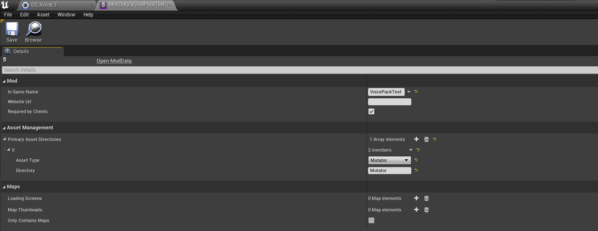
ModData: Primary Asset Directories with Asset Type Mutator and the mutator folder
Tested on Nov 9, 2026: in Play In Editor, then packaged on a dedicated server with stock classes. Other players hear it too: the soldier's DialogueDictionary replicates to every client (no replication condition), and a 2-player Listen Server PIE test played the custom line from both windows. Not yet checked: dictionaries from the other faction.
Extra: the Station (radio) voice
The Station is the radio operator who answers when fire support is called in: "fire support ready", "didn't copy", artillery and gunship start and finish lines, and the Survival extraction lines. It isn't a player voice, so Options A and B don't touch it. Each side has one: Game/Data/Dialogue/Security_Station_VoiceDictionary and Insurgent_Station_VoiceDictionary.
The game reads that dictionary's lists every time it plays a radio line, so a mutator can empty them at the start of the match and refill them from your copy.
Make your copy of the dictionary
In one Content Browser, go to
Game/Data/Dialogue(or searchstation_voice). DragSecurity_Station_VoiceDictionaryinto your mod folder in the other Content Browser and pick Copy Here (see Editor basics). Select the copy and press F2 to rename it.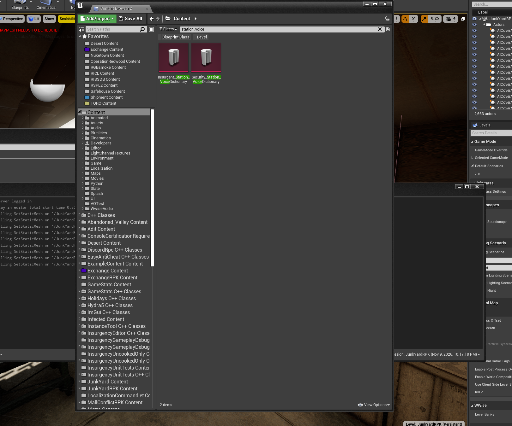
Content Browser search for station_voice showing both Station dictionaries Open it. It has two lists:
Station Phrases: the general radio lines (ready, didn't copy, reminder, extraction).
Fire Support Status Phrases: one entry per strike type (HE artillery, smoke, gunship, etc.), each with a start line and a finish line.
For every line you want to replace, pick your own event in its Event dropdown. Lines you leave alone stay stock. Save.
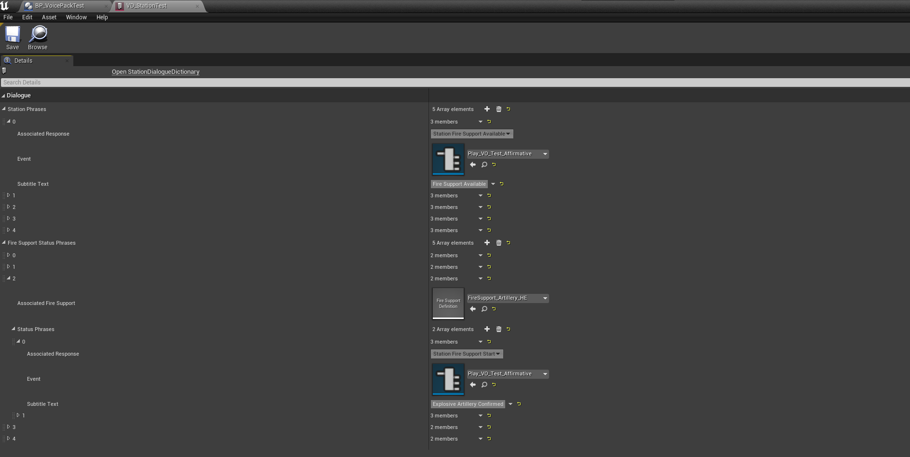
The dictionary copy: a Station Phrases entry and the HE artillery start line set to a custom event
The mutator
You can add this to the Option B mutator, or make a new Mutator Blueprint in your Mutators folder (see Option B step 2) and register it in ModData the same way.
Shortcut: instead of steps 2–7, open the box below, click Copy graph, click in the Event Graph and press Ctrl+V. The Target and Replacement nodes will show an error: right-click each → Create Variable, click Compile, then set their Default Values as in step 1.
Blueprint text: Station voice mutatorclick to show
Begin Object Class=/Script/BlueprintGraph.K2Node_Event Name="K2Node_Event_0"
EventReference=(MemberParent=Class'"/Script/Engine.ActorComponent"',MemberName="ReceiveBeginPlay")
bOverrideFunction=True
NodePosX=-240
NodePosY=272
NodeGuid=43BD35A740834594C5E516988164E203
CustomProperties Pin (PinId=9CAD9FEB45CEE1E56EF2EBBBF7FDB325,PinName="OutputDelegate",Direction="EGPD_Output",PinType.PinCategory="delegate",PinType.PinSubCategory="",PinType.PinSubCategoryObject=None,PinType.PinSubCategoryMemberReference=(MemberParent=Class'"/Script/Engine.ActorComponent"',MemberName="ReceiveBeginPlay"),PinType.PinValueType=(),PinType.ContainerType=None,PinType.bIsReference=False,PinType.bIsConst=False,PinType.bIsWeakPointer=False,PinType.bIsUObjectWrapper=False,PersistentGuid=00000000000000000000000000000000,bHidden=False,bNotConnectable=False,bDefaultValueIsReadOnly=False,bDefaultValueIsIgnored=False,bAdvancedView=False,bOrphanedPin=False,)
CustomProperties Pin (PinId=F378A95748CFC470C51CB2BA0B043B57,PinName="then",Direction="EGPD_Output",PinType.PinCategory="exec",PinType.PinSubCategory="",PinType.PinSubCategoryObject=None,PinType.PinSubCategoryMemberReference=(),PinType.PinValueType=(),PinType.ContainerType=None,PinType.bIsReference=False,PinType.bIsConst=False,PinType.bIsWeakPointer=False,PinType.bIsUObjectWrapper=False,LinkedTo=(K2Node_CallArrayFunction_2 836F25B24611D1E9637A2CA70910EF62,),PersistentGuid=00000000000000000000000000000000,bHidden=False,bNotConnectable=False,bDefaultValueIsReadOnly=False,bDefaultValueIsIgnored=False,bAdvancedView=False,bOrphanedPin=False,)
End Object
Begin Object Class=/Script/BlueprintGraph.K2Node_VariableGet Name="K2Node_VariableGet_2"
VariableReference=(MemberName="Target",MemberGuid=1AEAD6014D1F0B418ADA139AE284CEC2,bSelfContext=True)
NodePosX=-544
NodePosY=384
NodeGuid=D36CEC634ECB5E2E1BC609B2D4ACF5FF
CustomProperties Pin (PinId=697FAE084DB88A54DD7702A06172B161,PinName="Target",Direction="EGPD_Output",PinType.PinCategory="object",PinType.PinSubCategory="",PinType.PinSubCategoryObject=Class'"/Script/Insurgency.StationDialogueDictionary"',PinType.PinSubCategoryMemberReference=(),PinType.PinValueType=(),PinType.ContainerType=None,PinType.bIsReference=False,PinType.bIsConst=False,PinType.bIsWeakPointer=False,PinType.bIsUObjectWrapper=False,LinkedTo=(K2Node_VariableGet_3 0BF18DD94FB256F497E1B1B28583EAE0,K2Node_VariableGet_6 283DEBDA4A4ABE853C518491A8347983,),PersistentGuid=00000000000000000000000000000000,bHidden=False,bNotConnectable=False,bDefaultValueIsReadOnly=False,bDefaultValueIsIgnored=False,bAdvancedView=False,bOrphanedPin=False,)
CustomProperties Pin (PinId=0A69609545A76A8BBA1656A117266486,PinName="self",PinFriendlyName=NSLOCTEXT("K2Node", "Target", "Target"),PinType.PinCategory="object",PinType.PinSubCategory="",PinType.PinSubCategoryObject=BlueprintGeneratedClass'"/VoicePackTest/Mutator/BP_VoicePackTest.BP_VoicePackTest_C"',PinType.PinSubCategoryMemberReference=(),PinType.PinValueType=(),PinType.ContainerType=None,PinType.bIsReference=False,PinType.bIsConst=False,PinType.bIsWeakPointer=False,PinType.bIsUObjectWrapper=False,PersistentGuid=00000000000000000000000000000000,bHidden=True,bNotConnectable=False,bDefaultValueIsReadOnly=False,bDefaultValueIsIgnored=False,bAdvancedView=False,bOrphanedPin=False,)
End Object
Begin Object Class=/Script/BlueprintGraph.K2Node_VariableGet Name="K2Node_VariableGet_3"
VariableReference=(MemberParent=Class'"/Script/Insurgency.StationDialogueDictionary"',MemberName="StationPhrases")
SelfContextInfo=NotSelfContext
NodePosX=-384
NodePosY=352
NodeGuid=279F25314E13435A308B0A9B8DEDEE93
CustomProperties Pin (PinId=9F7F2E684872FC281ADF5296B5FBC75C,PinName="StationPhrases",PinFriendlyName=NSLOCTEXT("", "3D00629A414490929E9C0FAFD515B0A0", "Station Phrases"),Direction="EGPD_Output",PinType.PinCategory="struct",PinType.PinSubCategory="",PinType.PinSubCategoryObject=ScriptStruct'"/Script/Insurgency.StationPhrase"',PinType.PinSubCategoryMemberReference=(),PinType.PinValueType=(),PinType.ContainerType=Array,PinType.bIsReference=False,PinType.bIsConst=False,PinType.bIsWeakPointer=False,PinType.bIsUObjectWrapper=False,LinkedTo=(K2Node_CallArrayFunction_2 F0FDD01C4BFC1A5EFD3384860CBA10D7,K2Node_Knot_1 3B0BA941471DEEE5A13E008A9E1F5767,),PersistentGuid=00000000000000000000000000000000,bHidden=False,bNotConnectable=False,bDefaultValueIsReadOnly=False,bDefaultValueIsIgnored=False,bAdvancedView=False,bOrphanedPin=False,)
CustomProperties Pin (PinId=0BF18DD94FB256F497E1B1B28583EAE0,PinName="self",PinFriendlyName=NSLOCTEXT("K2Node", "Target", "Target"),PinType.PinCategory="object",PinType.PinSubCategory="",PinType.PinSubCategoryObject=Class'"/Script/Insurgency.StationDialogueDictionary"',PinType.PinSubCategoryMemberReference=(),PinType.PinValueType=(),PinType.ContainerType=None,PinType.bIsReference=False,PinType.bIsConst=False,PinType.bIsWeakPointer=False,PinType.bIsUObjectWrapper=False,LinkedTo=(K2Node_VariableGet_2 697FAE084DB88A54DD7702A06172B161,),PersistentGuid=00000000000000000000000000000000,bHidden=False,bNotConnectable=False,bDefaultValueIsReadOnly=False,bDefaultValueIsIgnored=False,bAdvancedView=False,bOrphanedPin=False,)
End Object
Begin Object Class=/Script/BlueprintGraph.K2Node_CallArrayFunction Name="K2Node_CallArrayFunction_2"
FunctionReference=(MemberParent=Class'"/Script/Engine.KismetArrayLibrary"',MemberName="Array_Clear")
NodePosX=-32
NodePosY=272
NodeGuid=D8C8954C4CF9E3F0B76A4D96E3005E55
CustomProperties Pin (PinId=836F25B24611D1E9637A2CA70910EF62,PinName="execute",PinToolTip="\nExec",PinType.PinCategory="exec",PinType.PinSubCategory="",PinType.PinSubCategoryObject=None,PinType.PinSubCategoryMemberReference=(),PinType.PinValueType=(),PinType.ContainerType=None,PinType.bIsReference=False,PinType.bIsConst=False,PinType.bIsWeakPointer=False,PinType.bIsUObjectWrapper=False,LinkedTo=(K2Node_Event_0 F378A95748CFC470C51CB2BA0B043B57,),PersistentGuid=00000000000000000000000000000000,bHidden=False,bNotConnectable=False,bDefaultValueIsReadOnly=False,bDefaultValueIsIgnored=False,bAdvancedView=False,bOrphanedPin=False,)
CustomProperties Pin (PinId=1A2646E4470C11BD0E56669F7217397B,PinName="then",PinToolTip="\nExec",Direction="EGPD_Output",PinType.PinCategory="exec",PinType.PinSubCategory="",PinType.PinSubCategoryObject=None,PinType.PinSubCategoryMemberReference=(),PinType.PinValueType=(),PinType.ContainerType=None,PinType.bIsReference=False,PinType.bIsConst=False,PinType.bIsWeakPointer=False,PinType.bIsUObjectWrapper=False,LinkedTo=(K2Node_CallArrayFunction_3 778BABA04537344227ED9DA3857D360D,),PersistentGuid=00000000000000000000000000000000,bHidden=False,bNotConnectable=False,bDefaultValueIsReadOnly=False,bDefaultValueIsIgnored=False,bAdvancedView=False,bOrphanedPin=False,)
CustomProperties Pin (PinId=125E8EC4449E73FA7F1036BD7FCFFAF6,PinName="self",PinFriendlyName=NSLOCTEXT("K2Node", "Target", "Target"),PinToolTip="Target\nKismet Array Library Object Reference",PinType.PinCategory="object",PinType.PinSubCategory="",PinType.PinSubCategoryObject=Class'"/Script/Engine.KismetArrayLibrary"',PinType.PinSubCategoryMemberReference=(),PinType.PinValueType=(),PinType.ContainerType=None,PinType.bIsReference=False,PinType.bIsConst=False,PinType.bIsWeakPointer=False,PinType.bIsUObjectWrapper=False,DefaultObject="/Script/Engine.Default__KismetArrayLibrary",PersistentGuid=00000000000000000000000000000000,bHidden=True,bNotConnectable=False,bDefaultValueIsReadOnly=False,bDefaultValueIsIgnored=False,bAdvancedView=False,bOrphanedPin=False,)
CustomProperties Pin (PinId=F0FDD01C4BFC1A5EFD3384860CBA10D7,PinName="TargetArray",PinToolTip="Target Array\nArray of Station Phrase Structures\n\nThe array to clear",PinType.PinCategory="struct",PinType.PinSubCategory="",PinType.PinSubCategoryObject=ScriptStruct'"/Script/Insurgency.StationPhrase"',PinType.PinSubCategoryMemberReference=(),PinType.PinValueType=(),PinType.ContainerType=Array,PinType.bIsReference=True,PinType.bIsConst=True,PinType.bIsWeakPointer=False,PinType.bIsUObjectWrapper=False,LinkedTo=(K2Node_VariableGet_3 9F7F2E684872FC281ADF5296B5FBC75C,),PersistentGuid=00000000000000000000000000000000,bHidden=False,bNotConnectable=False,bDefaultValueIsReadOnly=False,bDefaultValueIsIgnored=True,bAdvancedView=False,bOrphanedPin=False,)
End Object
Begin Object Class=/Script/BlueprintGraph.K2Node_CallArrayFunction Name="K2Node_CallArrayFunction_3"
FunctionReference=(MemberParent=Class'"/Script/Engine.KismetArrayLibrary"',MemberName="Array_Append")
NodePosX=144
NodePosY=272
NodeGuid=B9AF57404C07ED03620146A766702813
CustomProperties Pin (PinId=778BABA04537344227ED9DA3857D360D,PinName="execute",PinToolTip="\nExec",PinType.PinCategory="exec",PinType.PinSubCategory="",PinType.PinSubCategoryObject=None,PinType.PinSubCategoryMemberReference=(),PinType.PinValueType=(),PinType.ContainerType=None,PinType.bIsReference=False,PinType.bIsConst=False,PinType.bIsWeakPointer=False,PinType.bIsUObjectWrapper=False,LinkedTo=(K2Node_CallArrayFunction_2 1A2646E4470C11BD0E56669F7217397B,),PersistentGuid=00000000000000000000000000000000,bHidden=False,bNotConnectable=False,bDefaultValueIsReadOnly=False,bDefaultValueIsIgnored=False,bAdvancedView=False,bOrphanedPin=False,)
CustomProperties Pin (PinId=6257881740887F2CA3ECC5812941A084,PinName="then",PinToolTip="\nExec",Direction="EGPD_Output",PinType.PinCategory="exec",PinType.PinSubCategory="",PinType.PinSubCategoryObject=None,PinType.PinSubCategoryMemberReference=(),PinType.PinValueType=(),PinType.ContainerType=None,PinType.bIsReference=False,PinType.bIsConst=False,PinType.bIsWeakPointer=False,PinType.bIsUObjectWrapper=False,LinkedTo=(K2Node_CallArrayFunction_4 C949A45744999CA9F5B71490C176FE07,),PersistentGuid=00000000000000000000000000000000,bHidden=False,bNotConnectable=False,bDefaultValueIsReadOnly=False,bDefaultValueIsIgnored=False,bAdvancedView=False,bOrphanedPin=False,)
CustomProperties Pin (PinId=697F351142CAD5E03B3588A3F01FBE6E,PinName="self",PinFriendlyName=NSLOCTEXT("K2Node", "Target", "Target"),PinToolTip="Target\nKismet Array Library Object Reference",PinType.PinCategory="object",PinType.PinSubCategory="",PinType.PinSubCategoryObject=Class'"/Script/Engine.KismetArrayLibrary"',PinType.PinSubCategoryMemberReference=(),PinType.PinValueType=(),PinType.ContainerType=None,PinType.bIsReference=False,PinType.bIsConst=False,PinType.bIsWeakPointer=False,PinType.bIsUObjectWrapper=False,DefaultObject="/Script/Engine.Default__KismetArrayLibrary",PersistentGuid=00000000000000000000000000000000,bHidden=True,bNotConnectable=False,bDefaultValueIsReadOnly=False,bDefaultValueIsIgnored=False,bAdvancedView=False,bOrphanedPin=False,)
CustomProperties Pin (PinId=D19499A74402A88728B04A8ACB1BFA78,PinName="TargetArray",PinToolTip="Target Array\nArray of Station Phrase Structures\n\nThe array to add the source array to",PinType.PinCategory="struct",PinType.PinSubCategory="",PinType.PinSubCategoryObject=ScriptStruct'"/Script/Insurgency.StationPhrase"',PinType.PinSubCategoryMemberReference=(),PinType.PinValueType=(),PinType.ContainerType=Array,PinType.bIsReference=True,PinType.bIsConst=True,PinType.bIsWeakPointer=False,PinType.bIsUObjectWrapper=False,LinkedTo=(K2Node_Knot_1 65AFBEFF486849CD3A5607AD3CC4A9CC,),PersistentGuid=00000000000000000000000000000000,bHidden=False,bNotConnectable=False,bDefaultValueIsReadOnly=False,bDefaultValueIsIgnored=True,bAdvancedView=False,bOrphanedPin=False,)
CustomProperties Pin (PinId=3AEA6E8F4942B73DBA413A978FC83B03,PinName="SourceArray",PinToolTip="Source Array\nArray of Station Phrase Structures\n\nThe array to add to the target array",PinType.PinCategory="struct",PinType.PinSubCategory="",PinType.PinSubCategoryObject=ScriptStruct'"/Script/Insurgency.StationPhrase"',PinType.PinSubCategoryMemberReference=(),PinType.PinValueType=(),PinType.ContainerType=Array,PinType.bIsReference=True,PinType.bIsConst=True,PinType.bIsWeakPointer=False,PinType.bIsUObjectWrapper=False,LinkedTo=(K2Node_Knot_0 BFF055884D5F2AA35BAA2B9A43C52035,),PersistentGuid=00000000000000000000000000000000,bHidden=False,bNotConnectable=False,bDefaultValueIsReadOnly=False,bDefaultValueIsIgnored=True,bAdvancedView=False,bOrphanedPin=False,)
End Object
Begin Object Class=/Script/BlueprintGraph.K2Node_VariableGet Name="K2Node_VariableGet_4"
VariableReference=(MemberName="Replacement",MemberGuid=D05B38FC47EC7C381507FF88E3AF5373,bSelfContext=True)
NodePosX=-528
NodePosY=480
NodeGuid=78C05F134F8F3F10B2373C804791BEC2
CustomProperties Pin (PinId=A301D9BC475F3E67E0FEA68827F5F189,PinName="Replacement",Direction="EGPD_Output",PinType.PinCategory="object",PinType.PinSubCategory="",PinType.PinSubCategoryObject=Class'"/Script/Insurgency.StationDialogueDictionary"',PinType.PinSubCategoryMemberReference=(),PinType.PinValueType=(),PinType.ContainerType=None,PinType.bIsReference=False,PinType.bIsConst=False,PinType.bIsWeakPointer=False,PinType.bIsUObjectWrapper=False,LinkedTo=(K2Node_VariableGet_5 A18A35B0496639FB340D78B327EF545A,K2Node_VariableGet_7 6EBB2F1D4FDCEDB186D902A418F17AB2,),PersistentGuid=00000000000000000000000000000000,bHidden=False,bNotConnectable=False,bDefaultValueIsReadOnly=False,bDefaultValueIsIgnored=False,bAdvancedView=False,bOrphanedPin=False,)
CustomProperties Pin (PinId=27CFA0904CDF493811D153BC22BCC48A,PinName="self",PinFriendlyName=NSLOCTEXT("K2Node", "Target", "Target"),PinType.PinCategory="object",PinType.PinSubCategory="",PinType.PinSubCategoryObject=BlueprintGeneratedClass'"/VoicePackTest/Mutator/BP_VoicePackTest.BP_VoicePackTest_C"',PinType.PinSubCategoryMemberReference=(),PinType.PinValueType=(),PinType.ContainerType=None,PinType.bIsReference=False,PinType.bIsConst=False,PinType.bIsWeakPointer=False,PinType.bIsUObjectWrapper=False,PersistentGuid=00000000000000000000000000000000,bHidden=True,bNotConnectable=False,bDefaultValueIsReadOnly=False,bDefaultValueIsIgnored=False,bAdvancedView=False,bOrphanedPin=False,)
End Object
Begin Object Class=/Script/BlueprintGraph.K2Node_VariableGet Name="K2Node_VariableGet_5"
VariableReference=(MemberParent=Class'"/Script/Insurgency.StationDialogueDictionary"',MemberName="StationPhrases")
SelfContextInfo=NotSelfContext
NodePosX=-352
NodePosY=464
NodeGuid=BA974A8744B63EE7B2AEBFB6F4E042C8
CustomProperties Pin (PinId=7E0B12874A53568F6B5A3D8DF5FB13E4,PinName="StationPhrases",PinFriendlyName=NSLOCTEXT("", "0D85AE3046348E23023A4ABAF391CD32", "Station Phrases"),Direction="EGPD_Output",PinType.PinCategory="struct",PinType.PinSubCategory="",PinType.PinSubCategoryObject=ScriptStruct'"/Script/Insurgency.StationPhrase"',PinType.PinSubCategoryMemberReference=(),PinType.PinValueType=(),PinType.ContainerType=Array,PinType.bIsReference=False,PinType.bIsConst=False,PinType.bIsWeakPointer=False,PinType.bIsUObjectWrapper=False,LinkedTo=(K2Node_Knot_0 62B0A18A445CB54EFD24D5AD522DE02D,),PersistentGuid=00000000000000000000000000000000,bHidden=False,bNotConnectable=False,bDefaultValueIsReadOnly=False,bDefaultValueIsIgnored=False,bAdvancedView=False,bOrphanedPin=False,)
CustomProperties Pin (PinId=A18A35B0496639FB340D78B327EF545A,PinName="self",PinFriendlyName=NSLOCTEXT("K2Node", "Target", "Target"),PinType.PinCategory="object",PinType.PinSubCategory="",PinType.PinSubCategoryObject=Class'"/Script/Insurgency.StationDialogueDictionary"',PinType.PinSubCategoryMemberReference=(),PinType.PinValueType=(),PinType.ContainerType=None,PinType.bIsReference=False,PinType.bIsConst=False,PinType.bIsWeakPointer=False,PinType.bIsUObjectWrapper=False,LinkedTo=(K2Node_VariableGet_4 A301D9BC475F3E67E0FEA68827F5F189,),PersistentGuid=00000000000000000000000000000000,bHidden=False,bNotConnectable=False,bDefaultValueIsReadOnly=False,bDefaultValueIsIgnored=False,bAdvancedView=False,bOrphanedPin=False,)
End Object
Begin Object Class=/Script/BlueprintGraph.K2Node_VariableGet Name="K2Node_VariableGet_6"
VariableReference=(MemberParent=Class'"/Script/Insurgency.StationDialogueDictionary"',MemberName="FireSupportStatusPhrases")
SelfContextInfo=NotSelfContext
NodePosX=-416
NodePosY=400
NodeGuid=BD123FF4453C78C373B9A6B1915867E7
CustomProperties Pin (PinId=5C82E663406A5014F021A3B9708561B9,PinName="FireSupportStatusPhrases",PinFriendlyName=NSLOCTEXT("", "C12F83BB4718001301C6DCB51B2E87A4", "Fire Support Status Phrases"),Direction="EGPD_Output",PinType.PinCategory="struct",PinType.PinSubCategory="",PinType.PinSubCategoryObject=ScriptStruct'"/Script/Insurgency.StationFireSupportStatusPhraseContainer"',PinType.PinSubCategoryMemberReference=(),PinType.PinValueType=(),PinType.ContainerType=Array,PinType.bIsReference=False,PinType.bIsConst=False,PinType.bIsWeakPointer=False,PinType.bIsUObjectWrapper=False,LinkedTo=(K2Node_Knot_3 DB66EB2E40B4CA738039ABB6F41C281E,K2Node_Knot_4 DF0F409442246E56C3CC0BBE750DFAD0,),PersistentGuid=00000000000000000000000000000000,bHidden=False,bNotConnectable=False,bDefaultValueIsReadOnly=False,bDefaultValueIsIgnored=False,bAdvancedView=False,bOrphanedPin=False,)
CustomProperties Pin (PinId=283DEBDA4A4ABE853C518491A8347983,PinName="self",PinFriendlyName=NSLOCTEXT("K2Node", "Target", "Target"),PinType.PinCategory="object",PinType.PinSubCategory="",PinType.PinSubCategoryObject=Class'"/Script/Insurgency.StationDialogueDictionary"',PinType.PinSubCategoryMemberReference=(),PinType.PinValueType=(),PinType.ContainerType=None,PinType.bIsReference=False,PinType.bIsConst=False,PinType.bIsWeakPointer=False,PinType.bIsUObjectWrapper=False,LinkedTo=(K2Node_VariableGet_2 697FAE084DB88A54DD7702A06172B161,),PersistentGuid=00000000000000000000000000000000,bHidden=False,bNotConnectable=False,bDefaultValueIsReadOnly=False,bDefaultValueIsIgnored=False,bAdvancedView=False,bOrphanedPin=False,)
End Object
Begin Object Class=/Script/BlueprintGraph.K2Node_VariableGet Name="K2Node_VariableGet_7"
VariableReference=(MemberParent=Class'"/Script/Insurgency.StationDialogueDictionary"',MemberName="FireSupportStatusPhrases")
SelfContextInfo=NotSelfContext
NodePosX=-384
NodePosY=512
NodeGuid=B09C454D4AEE796083C695969D5B5DE7
CustomProperties Pin (PinId=75AEE8DC4108DCCA5D0BE8ACC7E69D14,PinName="FireSupportStatusPhrases",PinFriendlyName=NSLOCTEXT("", "D749049C494DA828D3EF69B669686313", "Fire Support Status Phrases"),Direction="EGPD_Output",PinType.PinCategory="struct",PinType.PinSubCategory="",PinType.PinSubCategoryObject=ScriptStruct'"/Script/Insurgency.StationFireSupportStatusPhraseContainer"',PinType.PinSubCategoryMemberReference=(),PinType.PinValueType=(),PinType.ContainerType=Array,PinType.bIsReference=False,PinType.bIsConst=False,PinType.bIsWeakPointer=False,PinType.bIsUObjectWrapper=False,LinkedTo=(K2Node_Knot_2 66A08C6543DAC798D4878AA49A82E5F6,),PersistentGuid=00000000000000000000000000000000,bHidden=False,bNotConnectable=False,bDefaultValueIsReadOnly=False,bDefaultValueIsIgnored=False,bAdvancedView=False,bOrphanedPin=False,)
CustomProperties Pin (PinId=6EBB2F1D4FDCEDB186D902A418F17AB2,PinName="self",PinFriendlyName=NSLOCTEXT("K2Node", "Target", "Target"),PinType.PinCategory="object",PinType.PinSubCategory="",PinType.PinSubCategoryObject=Class'"/Script/Insurgency.StationDialogueDictionary"',PinType.PinSubCategoryMemberReference=(),PinType.PinValueType=(),PinType.ContainerType=None,PinType.bIsReference=False,PinType.bIsConst=False,PinType.bIsWeakPointer=False,PinType.bIsUObjectWrapper=False,LinkedTo=(K2Node_VariableGet_4 A301D9BC475F3E67E0FEA68827F5F189,),PersistentGuid=00000000000000000000000000000000,bHidden=False,bNotConnectable=False,bDefaultValueIsReadOnly=False,bDefaultValueIsIgnored=False,bAdvancedView=False,bOrphanedPin=False,)
End Object
Begin Object Class=/Script/BlueprintGraph.K2Node_CallArrayFunction Name="K2Node_CallArrayFunction_4"
FunctionReference=(MemberParent=Class'"/Script/Engine.KismetArrayLibrary"',MemberName="Array_Clear")
NodePosX=336
NodePosY=272
NodeGuid=7BEA8ABF448C521E12FECF9CDEACB5DA
CustomProperties Pin (PinId=C949A45744999CA9F5B71490C176FE07,PinName="execute",PinToolTip="\nExec",PinType.PinCategory="exec",PinType.PinSubCategory="",PinType.PinSubCategoryObject=None,PinType.PinSubCategoryMemberReference=(),PinType.PinValueType=(),PinType.ContainerType=None,PinType.bIsReference=False,PinType.bIsConst=False,PinType.bIsWeakPointer=False,PinType.bIsUObjectWrapper=False,LinkedTo=(K2Node_CallArrayFunction_3 6257881740887F2CA3ECC5812941A084,),PersistentGuid=00000000000000000000000000000000,bHidden=False,bNotConnectable=False,bDefaultValueIsReadOnly=False,bDefaultValueIsIgnored=False,bAdvancedView=False,bOrphanedPin=False,)
CustomProperties Pin (PinId=8EE373CE4C24FF500CD590B763E08FA3,PinName="then",PinToolTip="\nExec",Direction="EGPD_Output",PinType.PinCategory="exec",PinType.PinSubCategory="",PinType.PinSubCategoryObject=None,PinType.PinSubCategoryMemberReference=(),PinType.PinValueType=(),PinType.ContainerType=None,PinType.bIsReference=False,PinType.bIsConst=False,PinType.bIsWeakPointer=False,PinType.bIsUObjectWrapper=False,LinkedTo=(K2Node_CallArrayFunction_5 88A05A654670F271D7A26EBB21053A7C,),PersistentGuid=00000000000000000000000000000000,bHidden=False,bNotConnectable=False,bDefaultValueIsReadOnly=False,bDefaultValueIsIgnored=False,bAdvancedView=False,bOrphanedPin=False,)
CustomProperties Pin (PinId=E7FA58964DA679DE47186A90846C16E2,PinName="self",PinFriendlyName=NSLOCTEXT("K2Node", "Target", "Target"),PinToolTip="Target\nKismet Array Library Object Reference",PinType.PinCategory="object",PinType.PinSubCategory="",PinType.PinSubCategoryObject=Class'"/Script/Engine.KismetArrayLibrary"',PinType.PinSubCategoryMemberReference=(),PinType.PinValueType=(),PinType.ContainerType=None,PinType.bIsReference=False,PinType.bIsConst=False,PinType.bIsWeakPointer=False,PinType.bIsUObjectWrapper=False,DefaultObject="/Script/Engine.Default__KismetArrayLibrary",PersistentGuid=00000000000000000000000000000000,bHidden=True,bNotConnectable=False,bDefaultValueIsReadOnly=False,bDefaultValueIsIgnored=False,bAdvancedView=False,bOrphanedPin=False,)
CustomProperties Pin (PinId=E43E2F804E48912F906C798D748D4698,PinName="TargetArray",PinToolTip="Target Array\nArray of Station Fire Support Status Phrase Container Structures\n\nThe array to clear",PinType.PinCategory="struct",PinType.PinSubCategory="",PinType.PinSubCategoryObject=ScriptStruct'"/Script/Insurgency.StationFireSupportStatusPhraseContainer"',PinType.PinSubCategoryMemberReference=(),PinType.PinValueType=(),PinType.ContainerType=Array,PinType.bIsReference=True,PinType.bIsConst=True,PinType.bIsWeakPointer=False,PinType.bIsUObjectWrapper=False,LinkedTo=(K2Node_Knot_4 B45275684F4A48BA1820359C52B613F2,),PersistentGuid=00000000000000000000000000000000,bHidden=False,bNotConnectable=False,bDefaultValueIsReadOnly=False,bDefaultValueIsIgnored=True,bAdvancedView=False,bOrphanedPin=False,)
End Object
Begin Object Class=/Script/BlueprintGraph.K2Node_CallArrayFunction Name="K2Node_CallArrayFunction_5"
FunctionReference=(MemberParent=Class'"/Script/Engine.KismetArrayLibrary"',MemberName="Array_Append")
NodePosX=528
NodePosY=272
NodeGuid=7AAEAB7C419367523AE5638761F5EC56
CustomProperties Pin (PinId=88A05A654670F271D7A26EBB21053A7C,PinName="execute",PinToolTip="\nExec",PinType.PinCategory="exec",PinType.PinSubCategory="",PinType.PinSubCategoryObject=None,PinType.PinSubCategoryMemberReference=(),PinType.PinValueType=(),PinType.ContainerType=None,PinType.bIsReference=False,PinType.bIsConst=False,PinType.bIsWeakPointer=False,PinType.bIsUObjectWrapper=False,LinkedTo=(K2Node_CallArrayFunction_4 8EE373CE4C24FF500CD590B763E08FA3,),PersistentGuid=00000000000000000000000000000000,bHidden=False,bNotConnectable=False,bDefaultValueIsReadOnly=False,bDefaultValueIsIgnored=False,bAdvancedView=False,bOrphanedPin=False,)
CustomProperties Pin (PinId=020B64E44F02925AB9868FB1B29EC98E,PinName="then",PinToolTip="\nExec",Direction="EGPD_Output",PinType.PinCategory="exec",PinType.PinSubCategory="",PinType.PinSubCategoryObject=None,PinType.PinSubCategoryMemberReference=(),PinType.PinValueType=(),PinType.ContainerType=None,PinType.bIsReference=False,PinType.bIsConst=False,PinType.bIsWeakPointer=False,PinType.bIsUObjectWrapper=False,PersistentGuid=00000000000000000000000000000000,bHidden=False,bNotConnectable=False,bDefaultValueIsReadOnly=False,bDefaultValueIsIgnored=False,bAdvancedView=False,bOrphanedPin=False,)
CustomProperties Pin (PinId=12E75A64406785B870D367B8C537E4A6,PinName="self",PinFriendlyName=NSLOCTEXT("K2Node", "Target", "Target"),PinToolTip="Target\nKismet Array Library Object Reference",PinType.PinCategory="object",PinType.PinSubCategory="",PinType.PinSubCategoryObject=Class'"/Script/Engine.KismetArrayLibrary"',PinType.PinSubCategoryMemberReference=(),PinType.PinValueType=(),PinType.ContainerType=None,PinType.bIsReference=False,PinType.bIsConst=False,PinType.bIsWeakPointer=False,PinType.bIsUObjectWrapper=False,DefaultObject="/Script/Engine.Default__KismetArrayLibrary",PersistentGuid=00000000000000000000000000000000,bHidden=True,bNotConnectable=False,bDefaultValueIsReadOnly=False,bDefaultValueIsIgnored=False,bAdvancedView=False,bOrphanedPin=False,)
CustomProperties Pin (PinId=1384493B493D411D0DAB34A4D06FB75A,PinName="TargetArray",PinToolTip="Target Array\nArray of Station Fire Support Status Phrase Container Structures\n\nThe array to add the source array to",PinType.PinCategory="struct",PinType.PinSubCategory="",PinType.PinSubCategoryObject=ScriptStruct'"/Script/Insurgency.StationFireSupportStatusPhraseContainer"',PinType.PinSubCategoryMemberReference=(),PinType.PinValueType=(),PinType.ContainerType=Array,PinType.bIsReference=True,PinType.bIsConst=True,PinType.bIsWeakPointer=False,PinType.bIsUObjectWrapper=False,LinkedTo=(K2Node_Knot_3 19E4D5994345F91382856886DAE66744,),PersistentGuid=00000000000000000000000000000000,bHidden=False,bNotConnectable=False,bDefaultValueIsReadOnly=False,bDefaultValueIsIgnored=True,bAdvancedView=False,bOrphanedPin=False,)
CustomProperties Pin (PinId=6177BFDC4DAE54A5081F659F36DA0582,PinName="SourceArray",PinToolTip="Source Array\nArray of Station Fire Support Status Phrase Container Structures\n\nThe array to add to the target array",PinType.PinCategory="struct",PinType.PinSubCategory="",PinType.PinSubCategoryObject=ScriptStruct'"/Script/Insurgency.StationFireSupportStatusPhraseContainer"',PinType.PinSubCategoryMemberReference=(),PinType.PinValueType=(),PinType.ContainerType=Array,PinType.bIsReference=True,PinType.bIsConst=True,PinType.bIsWeakPointer=False,PinType.bIsUObjectWrapper=False,LinkedTo=(K2Node_Knot_2 5BC16BFF4998222AE253CABD119E0D58,),PersistentGuid=00000000000000000000000000000000,bHidden=False,bNotConnectable=False,bDefaultValueIsReadOnly=False,bDefaultValueIsIgnored=True,bAdvancedView=False,bOrphanedPin=False,)
End Object
Begin Object Class=/Script/BlueprintGraph.K2Node_Knot Name="K2Node_Knot_0"
NodePosX=64
NodePosY=464
NodeGuid=C377FD20468579A4528A9788012F9C40
CustomProperties Pin (PinId=62B0A18A445CB54EFD24D5AD522DE02D,PinName="InputPin",PinType.PinCategory="struct",PinType.PinSubCategory="",PinType.PinSubCategoryObject=ScriptStruct'"/Script/Insurgency.StationPhrase"',PinType.PinSubCategoryMemberReference=(),PinType.PinValueType=(),PinType.ContainerType=Array,PinType.bIsReference=False,PinType.bIsConst=False,PinType.bIsWeakPointer=False,PinType.bIsUObjectWrapper=False,LinkedTo=(K2Node_VariableGet_5 7E0B12874A53568F6B5A3D8DF5FB13E4,),PersistentGuid=00000000000000000000000000000000,bHidden=False,bNotConnectable=False,bDefaultValueIsReadOnly=False,bDefaultValueIsIgnored=True,bAdvancedView=False,bOrphanedPin=False,)
CustomProperties Pin (PinId=BFF055884D5F2AA35BAA2B9A43C52035,PinName="OutputPin",Direction="EGPD_Output",PinType.PinCategory="struct",PinType.PinSubCategory="",PinType.PinSubCategoryObject=ScriptStruct'"/Script/Insurgency.StationPhrase"',PinType.PinSubCategoryMemberReference=(),PinType.PinValueType=(),PinType.ContainerType=Array,PinType.bIsReference=False,PinType.bIsConst=False,PinType.bIsWeakPointer=False,PinType.bIsUObjectWrapper=False,LinkedTo=(K2Node_CallArrayFunction_3 3AEA6E8F4942B73DBA413A978FC83B03,),PersistentGuid=00000000000000000000000000000000,bHidden=False,bNotConnectable=False,bDefaultValueIsReadOnly=False,bDefaultValueIsIgnored=False,bAdvancedView=False,bOrphanedPin=False,)
End Object
Begin Object Class=/Script/BlueprintGraph.K2Node_Knot Name="K2Node_Knot_1"
NodePosX=64
NodePosY=448
NodeGuid=8A66A9EF4B96B40B1FE374A35AB60118
CustomProperties Pin (PinId=3B0BA941471DEEE5A13E008A9E1F5767,PinName="InputPin",PinType.PinCategory="struct",PinType.PinSubCategory="",PinType.PinSubCategoryObject=ScriptStruct'"/Script/Insurgency.StationPhrase"',PinType.PinSubCategoryMemberReference=(),PinType.PinValueType=(),PinType.ContainerType=Array,PinType.bIsReference=False,PinType.bIsConst=False,PinType.bIsWeakPointer=False,PinType.bIsUObjectWrapper=False,LinkedTo=(K2Node_VariableGet_3 9F7F2E684872FC281ADF5296B5FBC75C,),PersistentGuid=00000000000000000000000000000000,bHidden=False,bNotConnectable=False,bDefaultValueIsReadOnly=False,bDefaultValueIsIgnored=True,bAdvancedView=False,bOrphanedPin=False,)
CustomProperties Pin (PinId=65AFBEFF486849CD3A5607AD3CC4A9CC,PinName="OutputPin",Direction="EGPD_Output",PinType.PinCategory="struct",PinType.PinSubCategory="",PinType.PinSubCategoryObject=ScriptStruct'"/Script/Insurgency.StationPhrase"',PinType.PinSubCategoryMemberReference=(),PinType.PinValueType=(),PinType.ContainerType=Array,PinType.bIsReference=False,PinType.bIsConst=False,PinType.bIsWeakPointer=False,PinType.bIsUObjectWrapper=False,LinkedTo=(K2Node_CallArrayFunction_3 D19499A74402A88728B04A8ACB1BFA78,),PersistentGuid=00000000000000000000000000000000,bHidden=False,bNotConnectable=False,bDefaultValueIsReadOnly=False,bDefaultValueIsIgnored=False,bAdvancedView=False,bOrphanedPin=False,)
End Object
Begin Object Class=/Script/BlueprintGraph.K2Node_Knot Name="K2Node_Knot_2"
NodePosX=448
NodePosY=528
NodeGuid=3B4B6D064BCAAD144A3578B69381B122
CustomProperties Pin (PinId=66A08C6543DAC798D4878AA49A82E5F6,PinName="InputPin",PinType.PinCategory="struct",PinType.PinSubCategory="",PinType.PinSubCategoryObject=ScriptStruct'"/Script/Insurgency.StationFireSupportStatusPhraseContainer"',PinType.PinSubCategoryMemberReference=(),PinType.PinValueType=(),PinType.ContainerType=Array,PinType.bIsReference=False,PinType.bIsConst=False,PinType.bIsWeakPointer=False,PinType.bIsUObjectWrapper=False,LinkedTo=(K2Node_VariableGet_7 75AEE8DC4108DCCA5D0BE8ACC7E69D14,),PersistentGuid=00000000000000000000000000000000,bHidden=False,bNotConnectable=False,bDefaultValueIsReadOnly=False,bDefaultValueIsIgnored=True,bAdvancedView=False,bOrphanedPin=False,)
CustomProperties Pin (PinId=5BC16BFF4998222AE253CABD119E0D58,PinName="OutputPin",Direction="EGPD_Output",PinType.PinCategory="struct",PinType.PinSubCategory="",PinType.PinSubCategoryObject=ScriptStruct'"/Script/Insurgency.StationFireSupportStatusPhraseContainer"',PinType.PinSubCategoryMemberReference=(),PinType.PinValueType=(),PinType.ContainerType=Array,PinType.bIsReference=False,PinType.bIsConst=False,PinType.bIsWeakPointer=False,PinType.bIsUObjectWrapper=False,LinkedTo=(K2Node_CallArrayFunction_5 6177BFDC4DAE54A5081F659F36DA0582,),PersistentGuid=00000000000000000000000000000000,bHidden=False,bNotConnectable=False,bDefaultValueIsReadOnly=False,bDefaultValueIsIgnored=False,bAdvancedView=False,bOrphanedPin=False,)
End Object
Begin Object Class=/Script/BlueprintGraph.K2Node_Knot Name="K2Node_Knot_3"
NodePosX=416
NodePosY=528
NodeGuid=E8DC5A7A4E254C046C5AC7B9CF74859E
CustomProperties Pin (PinId=DB66EB2E40B4CA738039ABB6F41C281E,PinName="InputPin",PinType.PinCategory="struct",PinType.PinSubCategory="",PinType.PinSubCategoryObject=ScriptStruct'"/Script/Insurgency.StationFireSupportStatusPhraseContainer"',PinType.PinSubCategoryMemberReference=(),PinType.PinValueType=(),PinType.ContainerType=Array,PinType.bIsReference=False,PinType.bIsConst=False,PinType.bIsWeakPointer=False,PinType.bIsUObjectWrapper=False,LinkedTo=(K2Node_VariableGet_6 5C82E663406A5014F021A3B9708561B9,),PersistentGuid=00000000000000000000000000000000,bHidden=False,bNotConnectable=False,bDefaultValueIsReadOnly=False,bDefaultValueIsIgnored=True,bAdvancedView=False,bOrphanedPin=False,)
CustomProperties Pin (PinId=19E4D5994345F91382856886DAE66744,PinName="OutputPin",Direction="EGPD_Output",PinType.PinCategory="struct",PinType.PinSubCategory="",PinType.PinSubCategoryObject=ScriptStruct'"/Script/Insurgency.StationFireSupportStatusPhraseContainer"',PinType.PinSubCategoryMemberReference=(),PinType.PinValueType=(),PinType.ContainerType=Array,PinType.bIsReference=False,PinType.bIsConst=False,PinType.bIsWeakPointer=False,PinType.bIsUObjectWrapper=False,LinkedTo=(K2Node_CallArrayFunction_5 1384493B493D411D0DAB34A4D06FB75A,),PersistentGuid=00000000000000000000000000000000,bHidden=False,bNotConnectable=False,bDefaultValueIsReadOnly=False,bDefaultValueIsIgnored=False,bAdvancedView=False,bOrphanedPin=False,)
End Object
Begin Object Class=/Script/BlueprintGraph.K2Node_Knot Name="K2Node_Knot_4"
NodePosX=272
NodePosY=416
NodeGuid=ABB0C06A4495EB61D4E4C68E8F19E263
CustomProperties Pin (PinId=DF0F409442246E56C3CC0BBE750DFAD0,PinName="InputPin",PinType.PinCategory="struct",PinType.PinSubCategory="",PinType.PinSubCategoryObject=ScriptStruct'"/Script/Insurgency.StationFireSupportStatusPhraseContainer"',PinType.PinSubCategoryMemberReference=(),PinType.PinValueType=(),PinType.ContainerType=Array,PinType.bIsReference=False,PinType.bIsConst=False,PinType.bIsWeakPointer=False,PinType.bIsUObjectWrapper=False,LinkedTo=(K2Node_VariableGet_6 5C82E663406A5014F021A3B9708561B9,),PersistentGuid=00000000000000000000000000000000,bHidden=False,bNotConnectable=False,bDefaultValueIsReadOnly=False,bDefaultValueIsIgnored=True,bAdvancedView=False,bOrphanedPin=False,)
CustomProperties Pin (PinId=B45275684F4A48BA1820359C52B613F2,PinName="OutputPin",Direction="EGPD_Output",PinType.PinCategory="struct",PinType.PinSubCategory="",PinType.PinSubCategoryObject=ScriptStruct'"/Script/Insurgency.StationFireSupportStatusPhraseContainer"',PinType.PinSubCategoryMemberReference=(),PinType.PinValueType=(),PinType.ContainerType=Array,PinType.bIsReference=False,PinType.bIsConst=False,PinType.bIsWeakPointer=False,PinType.bIsUObjectWrapper=False,LinkedTo=(K2Node_CallArrayFunction_4 E43E2F804E48912F906C798D748D4698,),PersistentGuid=00000000000000000000000000000000,bHidden=False,bNotConnectable=False,bDefaultValueIsReadOnly=False,bDefaultValueIsIgnored=False,bAdvancedView=False,bOrphanedPin=False,)
End Object
Under Variables, add two variables. For each, set the type dropdown to Station Dialogue Dictionary → Object Reference, click Compile, then set the Default Value at the bottom of Details:
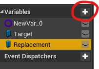
The + button next to Variables adds a variable Target=Security_Station_VoiceDictionary(the game's one)Replacement= your copy
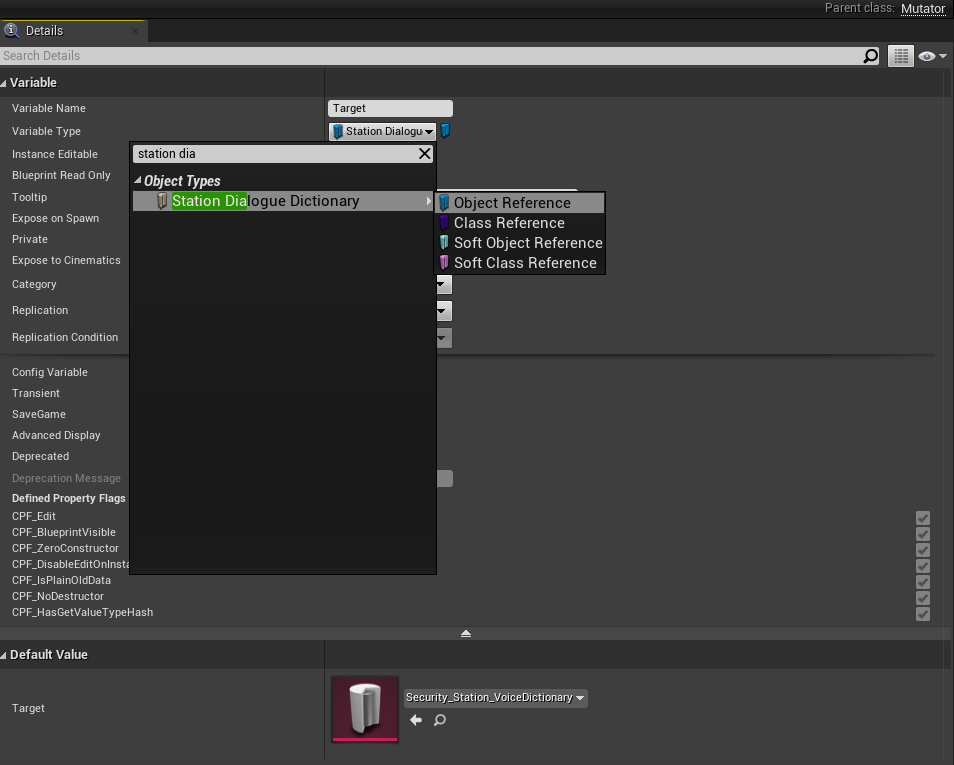
Target: type Station Dialogue Dictionary, Object Reference, default Security_Station_VoiceDictionary 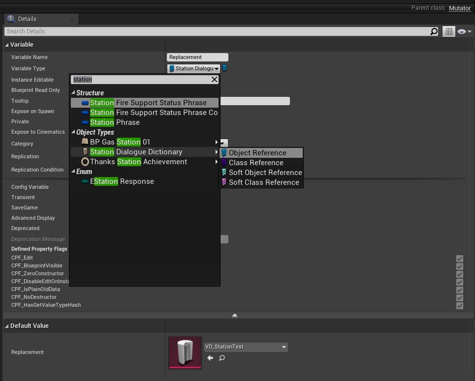
Replacement: same type, default set to your copy In the Event Graph, right-click empty space → Event BeginPlay.
Drag
Targetin (Get). Drag off its blue pin → Station Phrases.Drag off that Station Phrases pin → Clear. Wire BeginPlay's white pin into Clear.
Drag off the same Station Phrases pin again → Append. Wire Clear's white output into Append.
Drag
Replacementin (Get). Drag off it → Station Phrases → into Append's Source Array (bottom pin).For the strike lines, reuse the same two variable nodes: drag off
Target→ Fire Support Status Phrases → Clear, and off the same pin → Append. Drag offReplacement→ Fire Support Status Phrases → into that Append's Source Array. White wires: first Append → this Clear → this Append.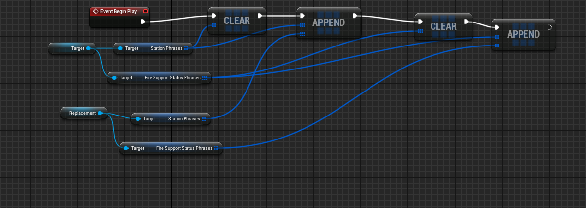
The finished graph: both Clear nodes fed from Target, both Append sources from Replacement Compile, Save, then package and upload as in section 6.
Both Clear nodes must be fed from Target, never from Replacement. If a Clear is on Replacement, it empties your copy instead and the game keeps playing the stock lines.
For the Insurgent radio, do the same again with Insurgent_Station_VoiceDictionary and its own copy.
Testing in Play In Editor: the line you hear right as you call in a strike is your own soldier's voice; the Station answers a moment later, when the strike starts. Play Commander and wait for "fire support ready", or call in a strike you changed. PIE edits to assets stay in the editor's memory until it's closed, so if a line goes silent between test runs, restart the editor.
Tested on Nov 10, 2026 in Play In Editor (Security side): Station Phrases and the explosive artillery start and finish lines played the custom event. Not yet checked: dedicated server, Insurgent side.
6. Package and publish
The audio ships as a separate pak that gets added to your mod's zip, so the order matters.
Test in the editor first (Play In Editor):
Open the test map: in the Content Browser go to TestSite Content → Maps and double-click TestSite (see Test map in Setup). Any other map with scenarios works too.
Slow PC? Before your first run, lower Settings → Engine Scalability Settings to Low or Medium.
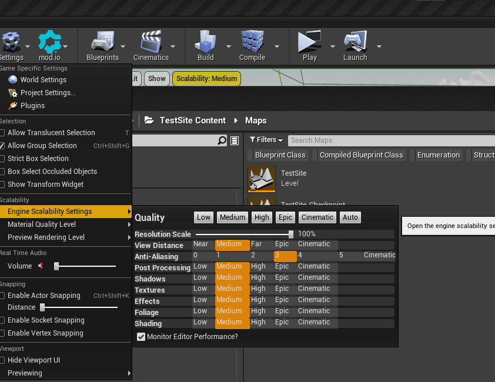
Settings → Engine Scalability Settings Click the small arrow next to Play and set:
New Editor Window (PIE): the mode most likely to actually run.
Enable bots (PvP modes) ticked. The Station test needs AI observers to call in fire support.
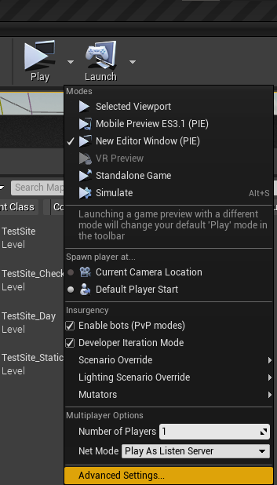
Play dropdown: New Editor Window (PIE) and Enable bots ticked Same menu → Mutators → tick your mutator. It only appears here once it's registered in your ModData.
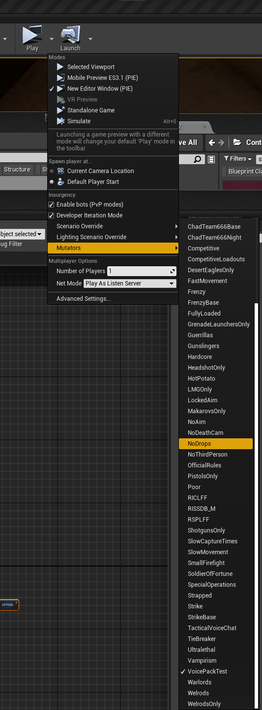
Play dropdown → Mutators: tick your mutator Click Play. The first launch can take 5 to 10 minutes; later launches are much faster.
Spawn in and trigger the line you replaced, e.g. the radial Affirmative. For the Station, play Commander and wait for "fire support ready", or call in a strike you changed. On TestSite the strike may not land anywhere, but the radio lines still play.
Your replaced lines should play your audio, and everything else should stay stock.
Package your mod the normal way: mod.io → Package Mod → your mod. Do this after every change to the dictionary, class, cosmetic or mutator.
PackageWwise.batonly adds audio to the zip that's already there, so an old package ships old assets.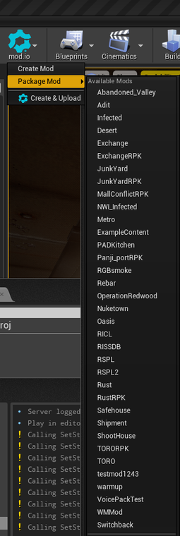
mod.io → Package Mod → your mod Run
SandstormEditor\PackageWwise.bat. Enter your bank name(s) (comma-separated), then your mod name. It builds<Mod>pakchunk-Sound.pakand adds it toInsurgency\Saved\StagedMods\<Mod>\<Mod>.zip. Your answers are saved toAudioPack.inifor next time.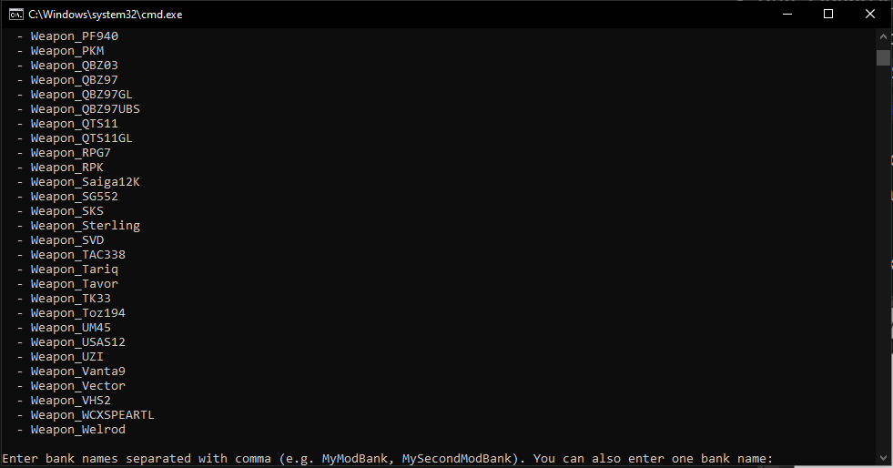
PackageWwise.bat lists the banks it found, then asks for your bank name(s) 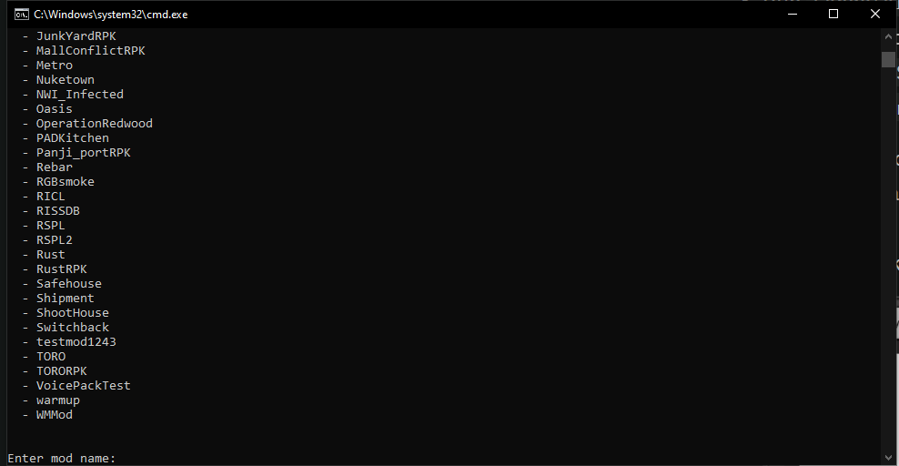
Then it lists your mods and asks for the mod name Upload the mod through mod.io → Create & Upload. The first time, pick Create Mod and fill in the logo, name and summary. After that, pick Edit Mods and choose your mod. Don't run Package Mod again between
PackageWwise.batand the upload: it rebuilds the zip without the sound pak.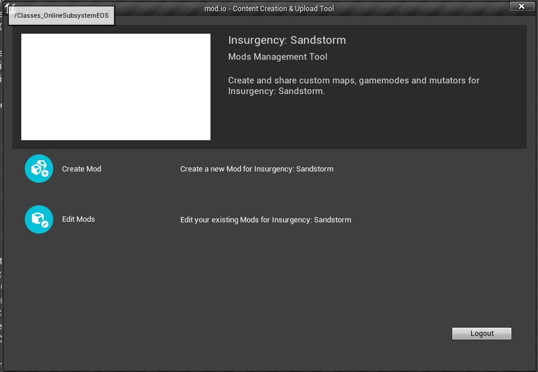
The upload tool: Create Mod for a new mod, Edit Mods for one you've already uploaded 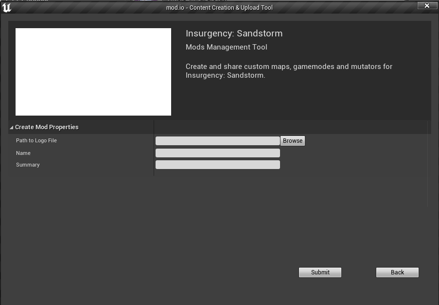
Create Mod: logo, name and summary In game, update or subscribe to the mod and test.
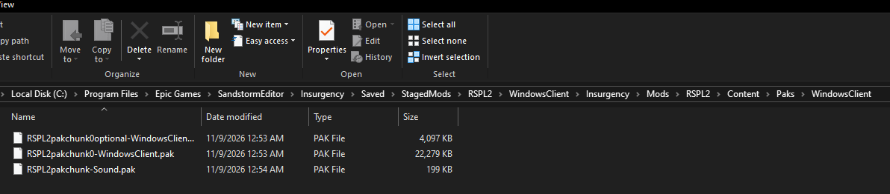
If you're testing on a mod people are playing, every upload goes live. Revert test changes and upload again when you're done.
Troubleshooting
Symptom | Cause | Fix |
|---|---|---|
Event won't play; no | Wwise Windows Installation Path (User Settings) not set. The editor looks for | Set the path to |
Log says | The assets were saved after a failed generation | Fix the generation (row above), regenerate, then save all. |
| The | Same as the first row. |
| The mod has never been packaged | Package the mod once first. |
Works in editor, old behavior in game | The zip was built before your last change, or Package Mod ran after the bat | Package the mod, run the bat, then upload. |
Useful log: SandstormEditor\Insurgency\Saved\Logs\Insurgency.log. Search it for AkSoundData and AkAudio.